政府税收、税收归宿、管制与政府失灵
税收归宿与弹性：法定纳税人≠经济纳税人；税负的无谓损失随税率的平方增长，引出拉弗曲线；再讨论直接管制、价格上限、官僚成本、腐败、地下经济、父爱主义与公平效率之争。
本讲要点
- 税收归宿
- 弹性与税负分担
- 无谓损失与税率
- 拉弗曲线
- 价格上限/下限
- 管制成本
- 政府失灵
- 父爱主义
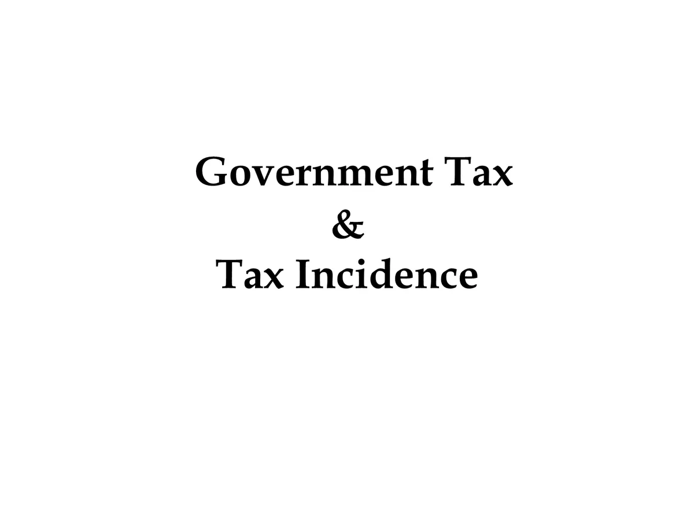
这是第九讲，主题是政府：它怎么收钱（税）、怎么管人（管制）、以及它自己为什么会失灵。
一讲之内要走完四段路：
- 税收归宿（tax incidence）：2 元钱的税，最后落在谁口袋里；
- 管制（regulation）：价格上限、价格下限、数量管制；
- 政府失灵（government failure）：官僚、腐败、地下经济；
- 公平与效率（equity vs efficiency）：最后那个没有标准答案的取舍。
注意这一讲的语气：我们始终用同一套供需工具，去审视政府这只手。
幻灯片原文 / 板书
Government Tax & Tax Incidence
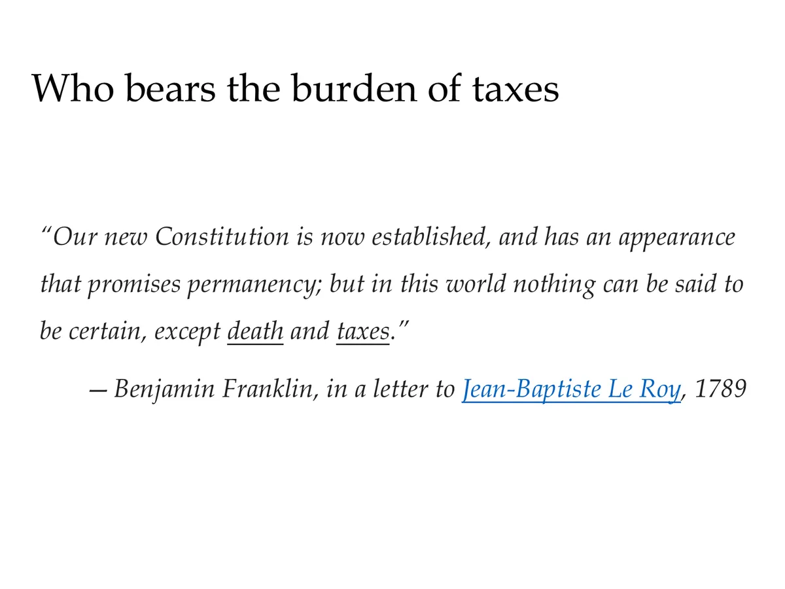
课件先引一句本杰明·富兰克林（Benjamin Franklin）1789 年写给 Jean-Baptiste Le Roy 的信：
在这个世界上，除了死亡和税收，没有什么是确定的。
这句俏皮话点出税的两个特征：强制性——不交不行；普遍性——谁都跑不掉。
但经济学家不会停在感叹上。既然税一定存在，真问题就变成：这笔钱最终从谁的口袋里出去？是写税单的那个人，还是别的人？
记住这个转向：从「该不该收税」转到「税落在谁身上」。这就是第一节的全部内容。
幻灯片原文 / 板书
Who bears the burden of taxes
---
“Our new Constitution is now established, and has an appearance that promises permanency; but in this world nothing can be said to be certain, except death and taxes.”
— Benjamin Franklin, in a letter to Jean-Baptiste Le Roy, 1789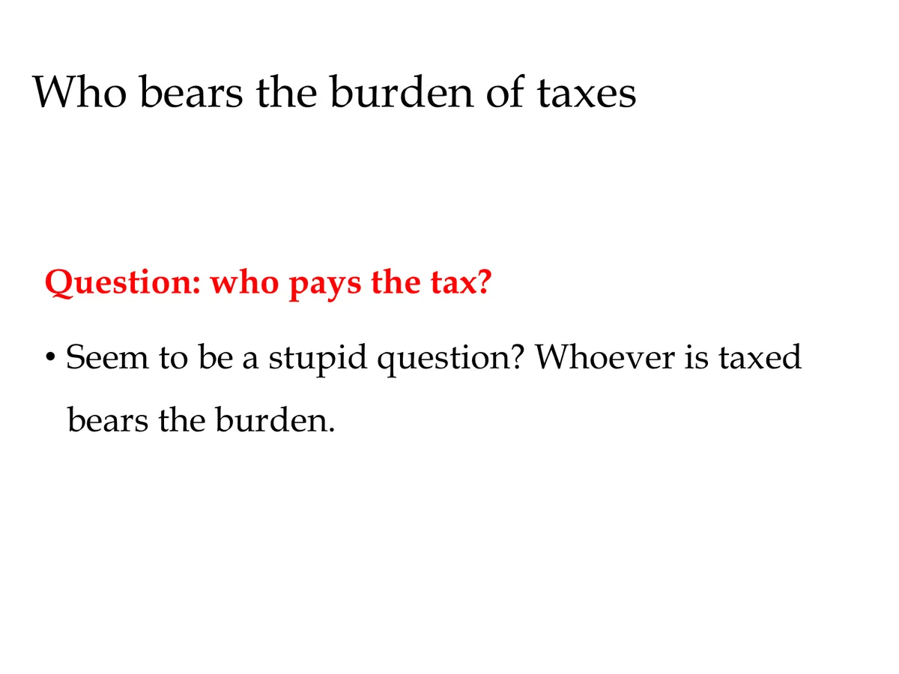
这一页只问一句：谁付了这笔税？
直觉答案几乎脱口而出：谁被征税，谁就承担——法定归宿（statutory incidence）写在谁名下，负担就在谁身上。
课件自己评价这个答案：Seem to be a stupid question? 看似是个不用问的问题。
先别翻页。请在纸上写下你的答案，并写一句理由。等一下我们会用杭州餐馆的例子，把这个「不用问的问题」拆成两半：名义上交给税务局的人，和实际上少拿了钱的人，往往不是同一个。
幻灯片原文 / 板书
Who bears the burden of taxes --- Question: who pays the tax? Seem to be a stupid question? Whoever is taxed bears the burden.
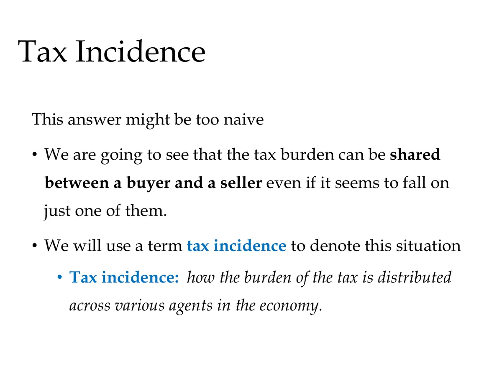
这一页给那个直觉定性：它「太天真」（too naive）。
原因：税可以在买方和卖方之间分摊，哪怕税法只写了一个人的名字。课件把这种现象命名：
- 税收归宿（tax incidence）：税负在经济中各主体之间实际如何分配。
注意这里有两条线。法定归宿是法律条文写的，经济归宿（economic incidence）是钱实际少在谁那里。这一讲所有的图、所有的弹性分析，研究的都是后者。
一句话记住：税法决定谁去交钱，供需决定谁真正掏钱。
幻灯片原文 / 板书
Tax Incidence --- This answer might be too naive We are going to see that the tax burden can be shared between a buyer and a seller even if it seems to fall on just one of them. We will use a term tax incidence to denote this situation Tax incidence: how the burden of the tax is distributed across various agents in the economy.
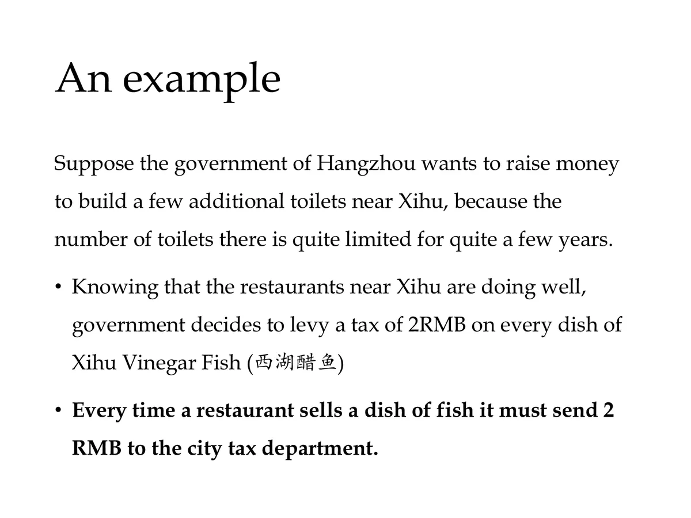
具体例子来了，地点在杭州。
政府想在西湖（Xihu）边多修几个厕所——那边厕所数量已经紧张好几年了。钱从哪来？政府看西湖边餐馆生意好，决定对每盘西湖醋鱼（Xihu Vinegar Fish）征 2 元税：餐馆每卖一盘，就要向市税务部门上缴 2 元。
注意税基的选择：不按利润，不按人头，而是按「盘」。这样一来，每卖一盘鱼，餐馆和顾客之间就凭空多出 2 元的差额。这个差额有个名字，叫税楔（tax wedge）。
下一页开始算它的后果。
幻灯片原文 / 板书
An example --- Suppose the government of Hangzhou wants to raise money to build a few additional toilets near Xihu, because the number of toilets there is quite limited for quite a few years. Knowing that the restaurants near Xihu are doing well, government decides to levy a tax of 2RMB on every dish of Xihu Vinegar Fish (西湖醋鱼) Every time a restaurant sells a dish of fish it must send 2 RMB to the city tax department.
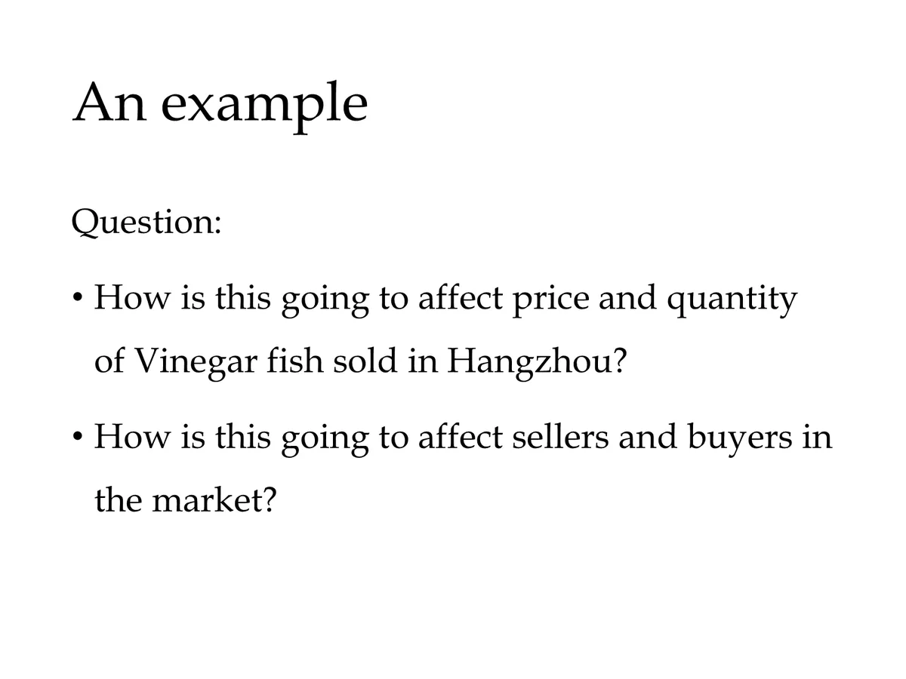
动手之前，课件先把问题列清楚，一共两组：
- 价格与数量：杭州西湖醋鱼的成交价和成交量会怎么变？
- 买卖双方：卖者拿到手的、买者付出去的，各自会怎么变？
注意第 2 个问题的问法。它没有问「谁交税」，而是问「谁的钱变了」——这正是归宿的视角。
下面那张图不是示意图，是带数字的：无税均衡 6.50 元、每天 4000 盘。请把这两个数字记住，后面每一页都要用。
幻灯片原文 / 板书
An example --- Question: How is this going to affect price and quantity of Vinegar fish sold in Hangzhou? How is this going to affect sellers and buyers in the market?
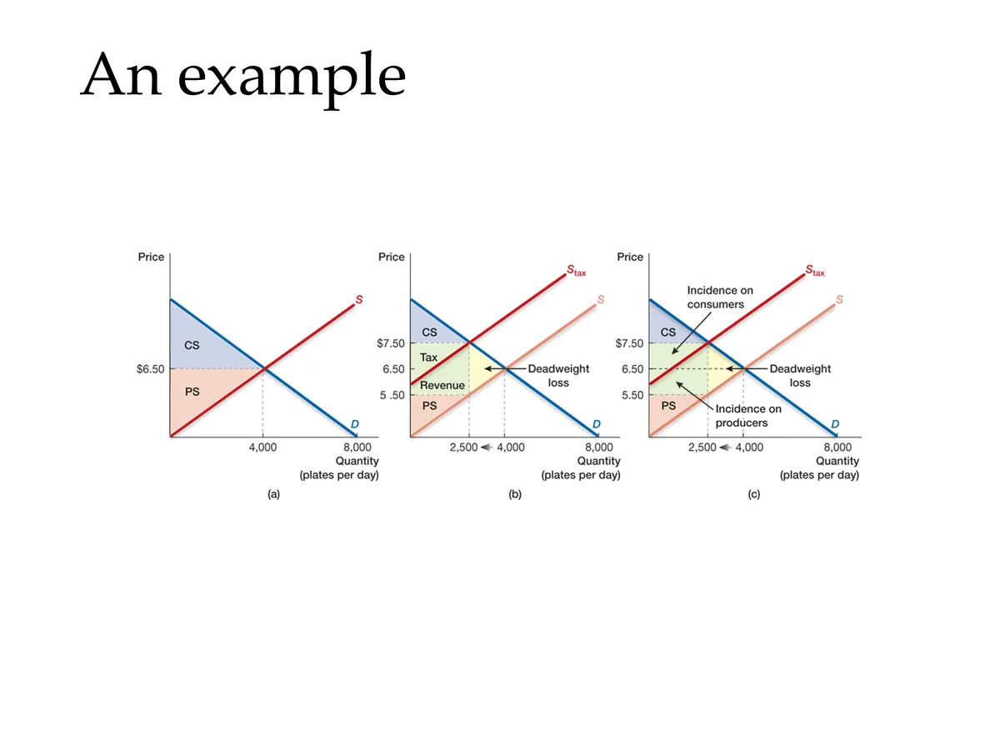
这张图是整讲的母图，三个面板从左到右是一个故事。
- (a) 无税：需求 D 与供给 S 交于 6.50 元、每天 4000 盘。蓝三角是消费者剩余（CS），粉三角是生产者剩余（PS）。
- (b) 对餐馆征税 2 元：供给曲线上移到 S_tax（每单位成本抬高 2 元）。成交量掉到 2500 盘；买者付 7.50，卖者净得 5.50。中间浅绿长方形＝2 元 × 2500 盘＝税收收入；右边黄色三角＝无谓损失（deadweight loss, DWL）。
- (c) 同一张图换个读法：7.50 与 6.50 之间的距离叫落在消费者身上的归宿，6.50 与 5.50 之间叫落在生产者身上的归宿。
读图口诀：税楔竖着插进均衡点，上面一截归买方，下面一截归卖方，右边剩下的三角是白白蒸发掉的。
幻灯片原文 / 板书
An example
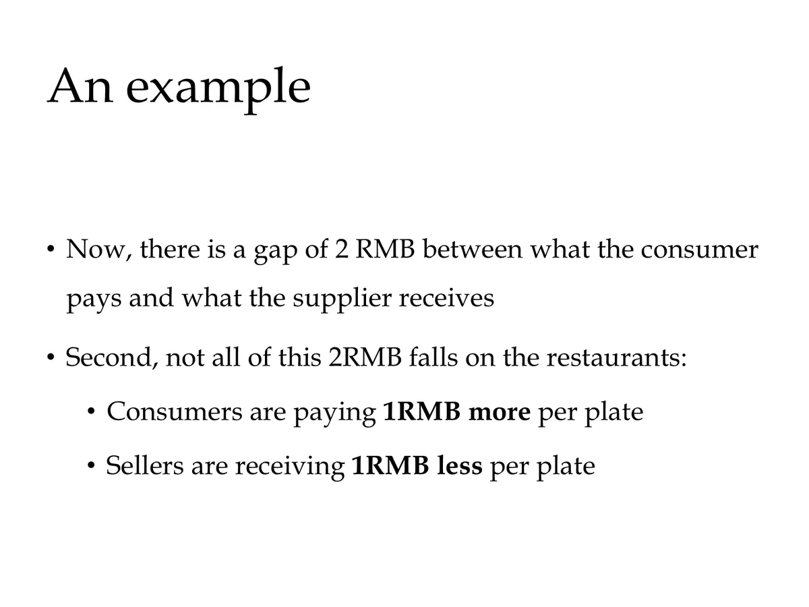
结算这张图的账，两个数字：
- 买者：从 6.50 涨到 7.50，每盘多付 1 元；
- 卖者：从 6.50 降到 5.50，每盘少收 1 元。
2 元的税，正好一人一半。成交量从 4000 盘降到 2500 盘——1500 盘鱼不再被生产出来，这就是那 2 元税楔造成的「交易消失」。
这是本讲的第一个反直觉结论：税并不完全落在被征税的那一方身上。哪怕税单上写的是餐馆，顾客也掏了一半。
为什么会正好对半？因为这个例子里供需弹性接近。下一页我们就把「弹性」这个开关拨动一下。
幻灯片原文 / 板书
Now, there is a gap of 2 RMB between what the consumer pays and what the supplier receives Second, not all of this 2RMB falls on the restaurants: Consumers are paying 1RMB more per plate Sellers are receiving 1RMB less per plate --- An example
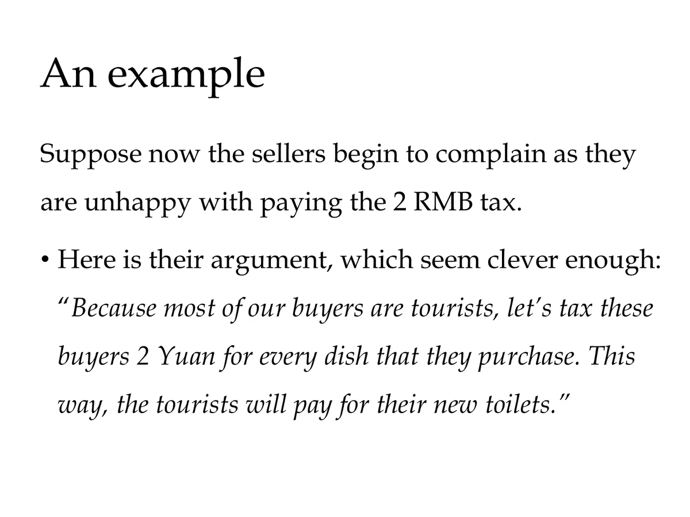
卖者不服气，提出一个听上去很聪明的方案：
「我们的客人大多是游客，那就让游客来交这 2 元——每买一盘鱼，游客自己掏 2 元给政府。这样厕所就由游客来修了。」
这个论证的巧妙之处在于：它把税从生产端挪到消费端，而且打的是「外地人」这张牌——政治上很好卖。
先别急着叫好。下一张图会告诉我们，如果政府真的照办，菜单上的标价会怎么变，游客最后到底付了多少。
幻灯片原文 / 板书
Suppose now the sellers begin to complain as they are unhappy with paying the 2 RMB tax. Here is their argument, which seem clever enough: “Because most of our buyers are tourists, let’s tax these buyers 2 Yuan for every dish that they purchase. This way, the tourists will pay for their new toilets.” --- An example
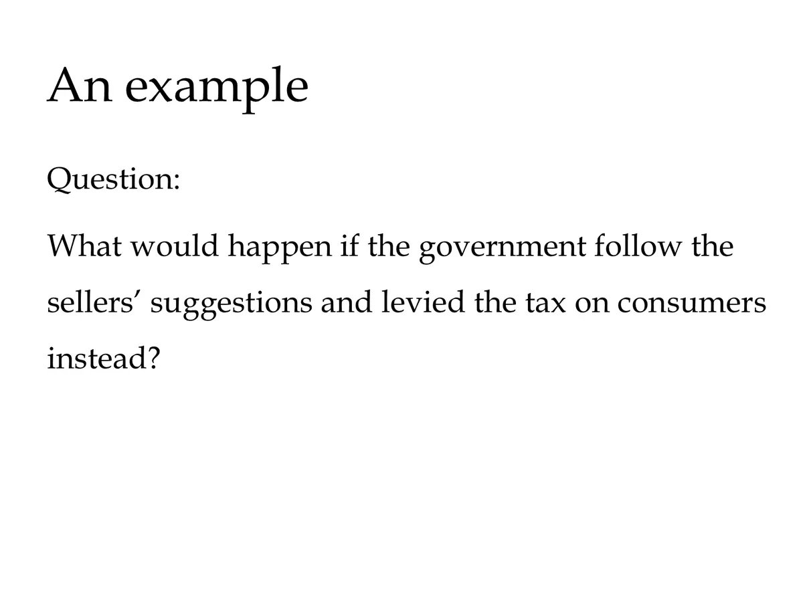
就一个问题：如果政府采纳卖者的建议，把 2 元税改向消费者征收，市场会变成什么样？
请先预测三件事，再翻页核对：
- 菜单标价会上升还是下降？
- 游客每盘实际付出多少？
- 餐馆每盘实际拿到多少？
大多数人的预测是「标价涨 2 元，游客全掏」。下一页的图会证明：三个预测里，两个是错的。
幻灯片原文 / 板书
Question: What would happen if the government follow the sellers’ suggestions and levied the tax on consumers instead? --- An example
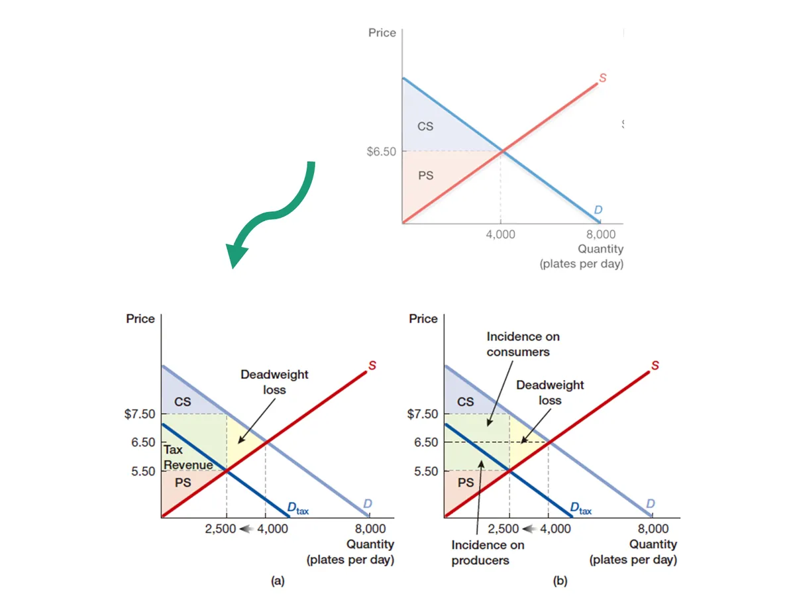
图来了。注意它和 P7 的差别只在「哪条线动」。
税向消费者收，等于买者每盘要多付 2 元，所以需求曲线向下平移 2 元，得到 D_tax。新交点对应的市场标价是 5.50 元，成交量同样是 2500 盘。
但 5.50 不是游客付的钱。游客要在 5.50 之外再交 2 元税，实际支出 7.50 元；餐馆净得 5.50 元。
把两个面板并排看：一个上移供给、一个下移需求，落点完全一样——7.50 / 5.50 / 2500。图上标的 Incidence on consumers 与 Incidence on producers，宽度也一模一样。
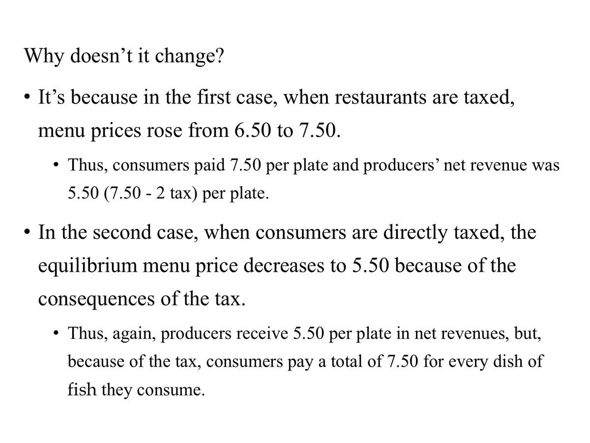
这一页把两笔账并排算清楚。
情形一（向餐馆收）：菜单价从 6.50 涨到 7.50。顾客付 7.50；餐馆收入 7.50，缴 2 元税，净得 5.50。
情形二（向顾客收）：税一收，市场均衡菜单价反而跌到 5.50。顾客付 5.50＋2＝7.50；餐馆净收入 5.50。
两种情形下，顾客都是 7.50，餐馆都是 5.50。
为什么会这样？因为价格是市场的清道夫，它只认一件事：让供给量等于需求量。税楔插在买卖双方之间，谁去税务局交钱，只是记账方式不同。
幻灯片原文 / 板书
Why doesn’t it change? It’s because in the first case, when restaurants are taxed, menu prices rose from 6.50 to 7.50. Thus, consumers paid 7.50 per plate and producers’ net revenue was 5.50 (7.50 - 2 tax) per plate. In the second case, when consumers are directly taxed, the equilibrium menu price decreases to 5.50 because of the consequences of the tax. Thus, again, producers receive 5.50 per plate in net revenues, but, because of the tax, consumers pay a total of 7.50 for every dish of fish they consume.
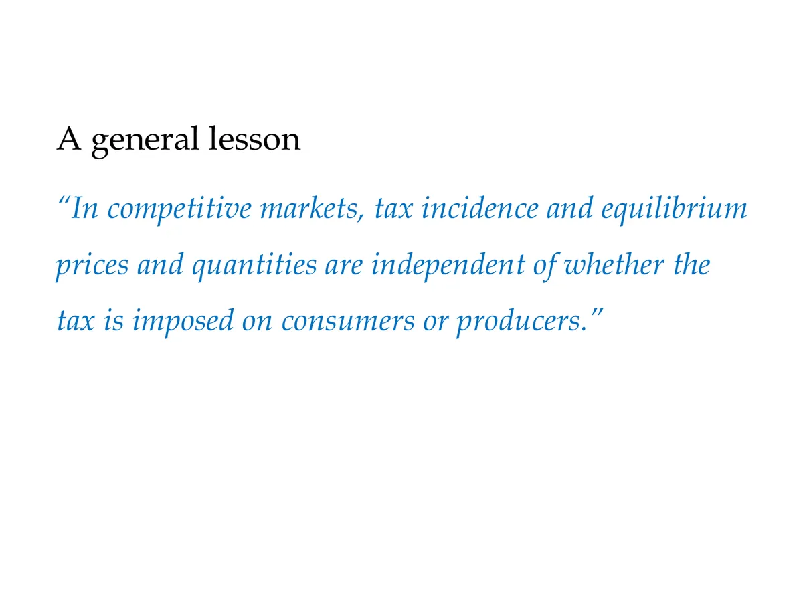
第一节的总结论，课件直接给了一句可以背下来的话：
在竞争性市场上，税收归宿、均衡价格与均衡数量，都与税向消费者收还是向生产者收无关。
这句话要记住三个前提：竞争性市场、税负可以转嫁、没有其他摩擦（信息、搜索、谈判力量）。
老师补充：一旦离开这三个前提，法定归宿就会开始有实际影响。比如只有一家企业垄断时，或者双方谈判力量悬殊时，「向谁收」会改变结果。考试里看到「完全竞争」四个字，这句话就可以直接用。
幻灯片原文 / 板书
A general lesson “In competitive markets, tax incidence and equilibrium prices and quantities are independent of whether the tax is imposed on consumers or producers.”
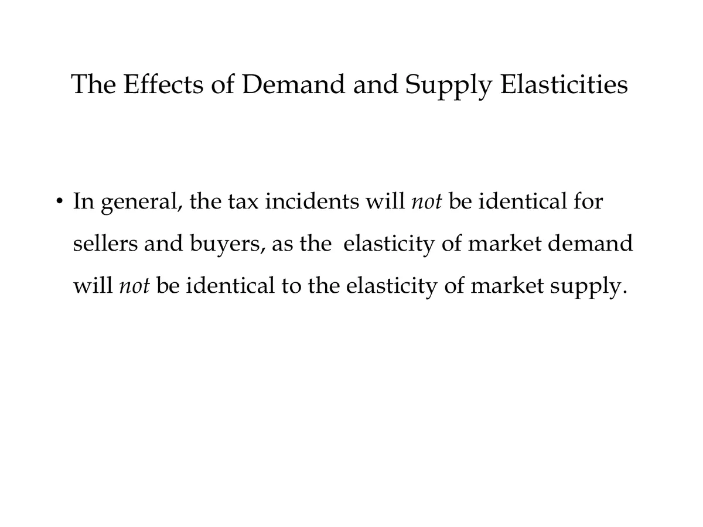
上一节的结论有个隐藏前提：供需弹性一样，所以税负正好对半。
现实里这个前提几乎从不成立。这一页点明：市场需求的弹性通常不等于市场供给的弹性，所以税负在买卖双方之间的分配也不会相同。
接下来两页是两组对照图，方法是控制变量：
- P15 固定需求，只让供给变得更平坦（更有弹性）；
- P16 固定供给，只让需求变得更平坦。
请重点盯住两个数字：买方付的价格、卖方收的价格，各偏离 6.50 多少。
幻灯片原文 / 板书
The Effects of Demand and Supply Elasticities --- In general, the tax incidents will not be identical for sellers and buyers, as the elasticity of market demand will not be identical to the elasticity of market supply.
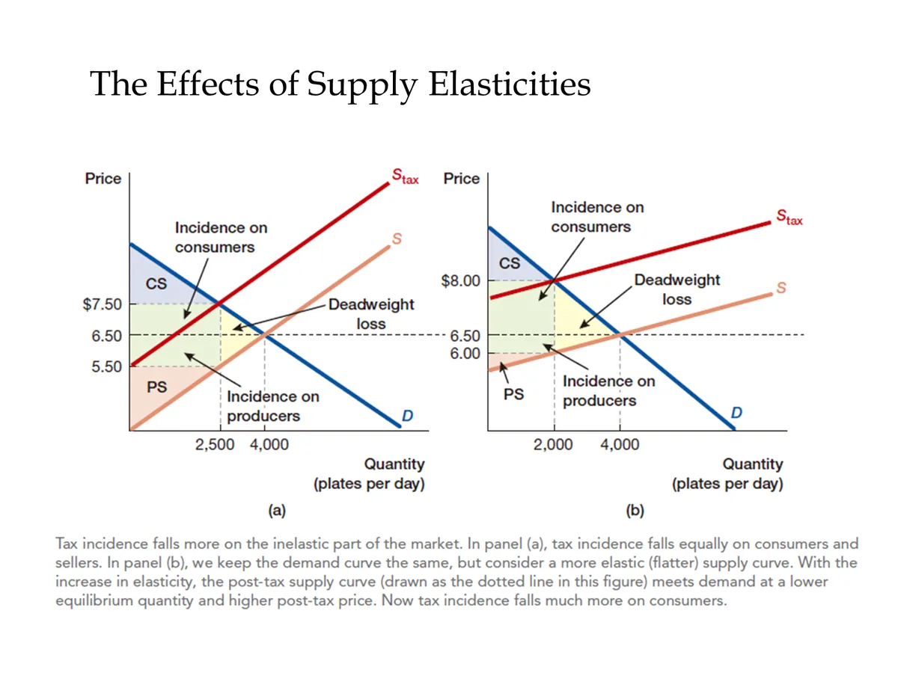
左图是基准：供需弹性相近，2 元税一人一半（7.50 / 5.50）。
右图把供给曲线换成更平坦的一条（更富有弹性），需求不变。均衡成交量掉到 2000 盘，买者付 8.00 元，卖者只得 6.00 元。
算负担：买方从 6.50 涨到 8.00，承担 1.50 元；卖方从 6.50 降到 6.00，只承担 0.50 元。
结论：供给越有弹性，卖者越容易跑掉，税就越多地压在买者身上。图注的说法是「归宿落在市场弹性较小的那一边」。
幻灯片原文 / 板书
The Effects of Supply Elasticities
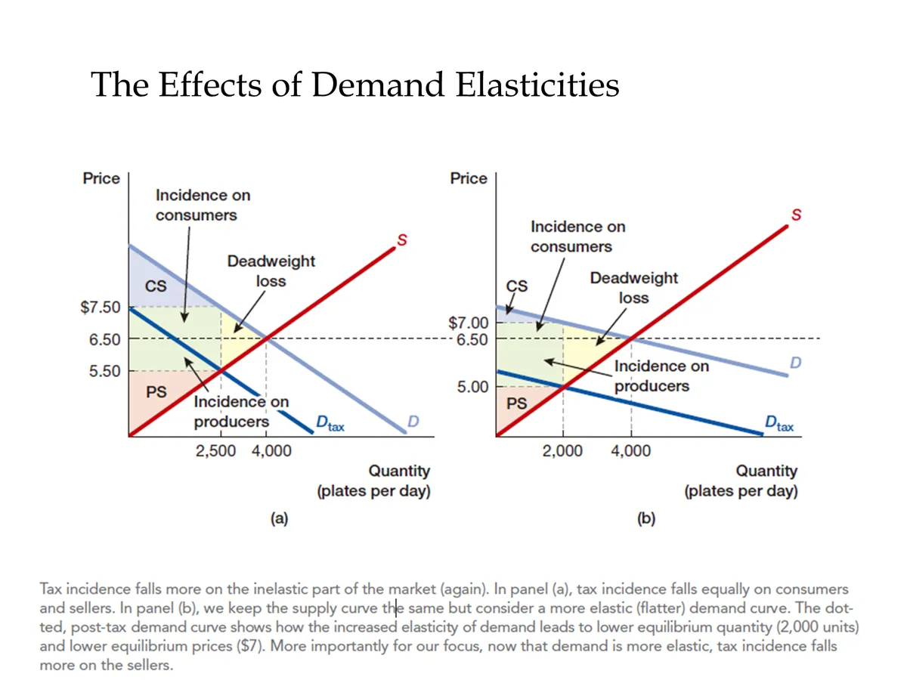
镜像的一页：这次固定供给，把需求换成更平坦的一条（更富有弹性）。
结果反过来：成交量 2000 盘，买者付 7.00 元，卖者只得 5.00 元。
负担：买方承担 7.00−6.50＝0.50 元；卖方承担 6.50−5.00＝1.50 元。三分之二的税压在卖者身上。
为什么？因为需求一有弹性，价格稍涨顾客就转身走人，卖者不敢把税加到价上，只能自己吞。
两页并排看，规律已经很清楚了。
幻灯片原文 / 板书
The Effects of Demand Elasticities
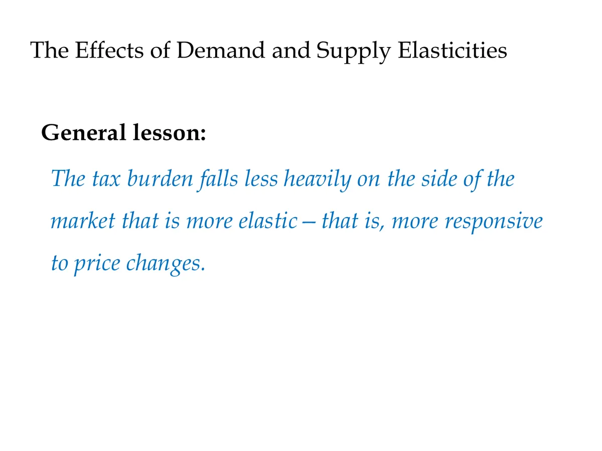
把两页合成一句话，这是本讲第二个必须背下来的结论：
税负更多地落在市场弹性较小——也就是对价格变化更不敏感——的那一方。
方向别记反：弹性大＝负担轻，因为它有退路。
这条规律可以推出两个极端：
- 需求完全无弹性（如救命药）→ 税几乎全由买方承担；
- 供给完全无弹性（如土地）→ 税几乎全由卖方承担。
老师补一句：土地税之所以被认为「最不扭曲」，就是因为土地供给几乎固定。
幻灯片原文 / 板书
General lesson: The tax burden falls less heavily on the side of the market that is more elastic—that is, more responsive to price changes. --- The Effects of Demand and Supply Elasticities
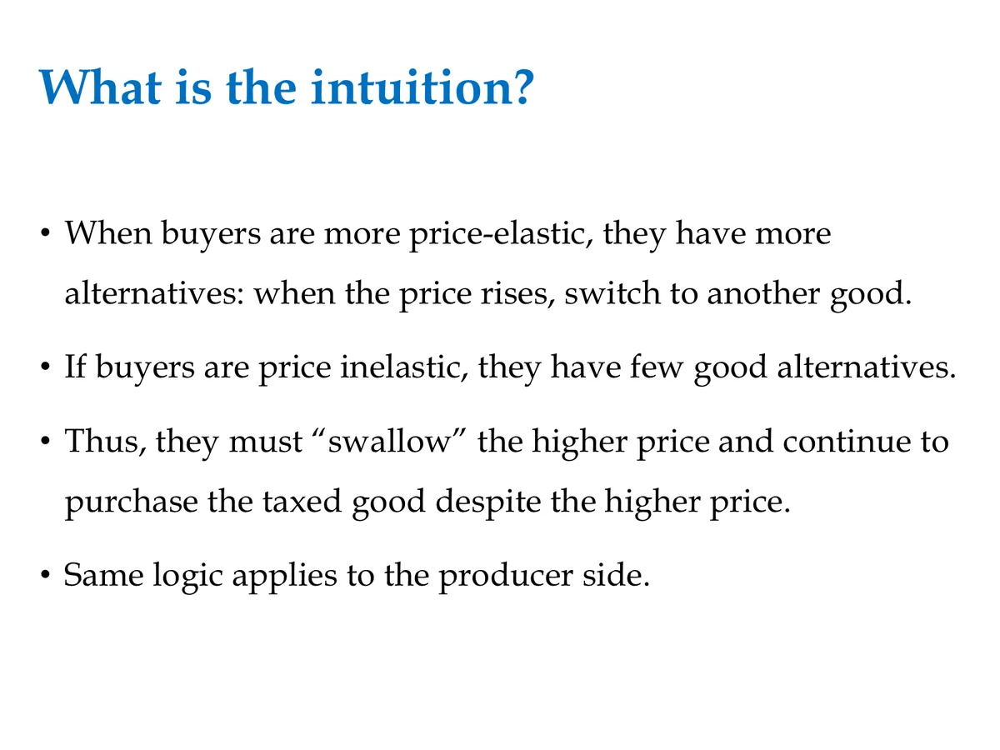
这一页给上面的规律一个直觉解释，关键词是替代品。
买者弹性大，意味着他手边有很多替代方案：鱼贵了改吃虾、改吃面。价格一涨他就走，卖方留不住他，只好自己承担税。
买者弹性小，意味着他没有像样的替代品——游客大老远来西湖，就想吃这一口——那他只能「吞下」（swallow）更高的价格，继续买。
生产端同理：厂房设备越专用、越难改行，供给越不弹性，卖者越只能自己消化税负。
一句话：弹性就是退路，有退路的人不接单。
幻灯片原文 / 板书
What is the intuition? When buyers are more price-elastic, they have more alternatives: when the price rises, switch to another good. If buyers are price inelastic, they have few good alternatives. Thus, they must “swallow” the higher price and continue to purchase the taxed good despite the higher price. Same logic applies to the producer side.
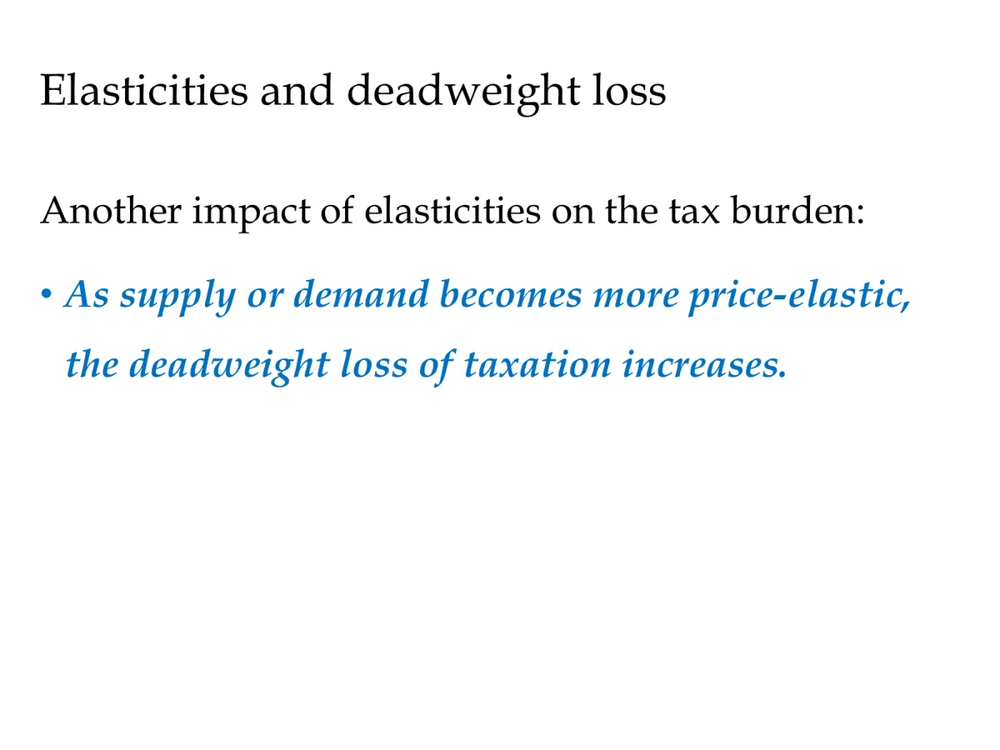
话题从「谁承担」转向「损失多大」。
课件的断言：供给或需求变得越有弹性，税收的无谓损失（deadweight loss）越大。
机制：DWL 来自那些「本来该成交、却被税挡住」的交易。弹性大，说明价格稍一动成交量就大幅收缩，被挡掉的交易多，三角就大；弹性小，成交量几乎不变，三角就小。
两条合起来看很有意思：弹性小的一方承担更多税负，但整个社会因这笔税损失的效率反而更小。公平地看是负担，效率地看是扭曲，两件事要分开算。
幻灯片原文 / 板书
Another impact of elasticities on the tax burden: As supply or demand becomes more price-elastic, the deadweight loss of taxation increases. --- Elasticities and deadweight loss
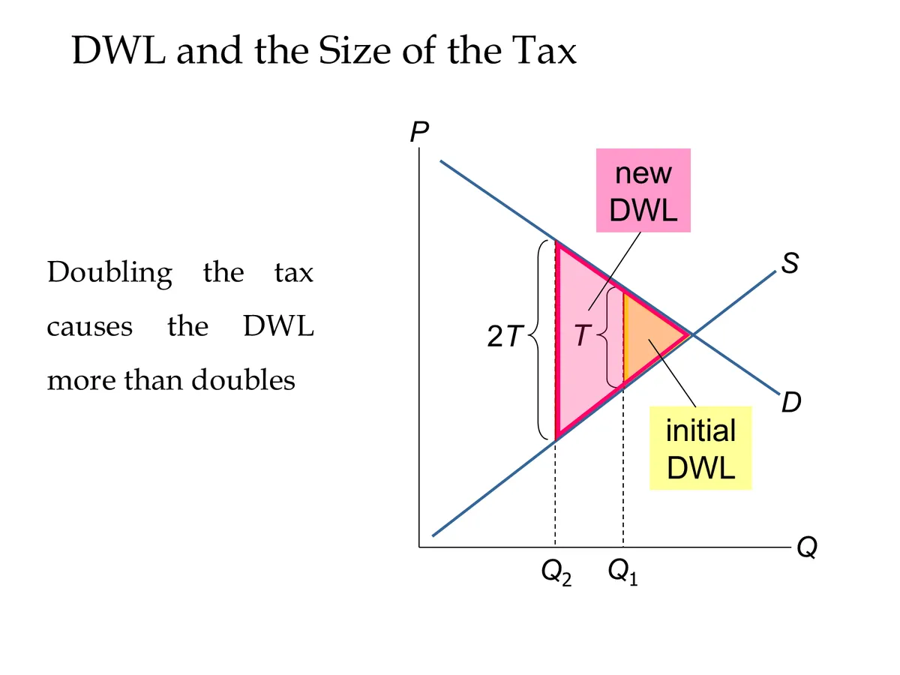
这一页把税率翻倍，看 DWL 怎么变。
原来的税是 T，成交量 Q1；税加到 2T，成交量掉到 Q2，三角明显长大。课件备注给的结论很硬：
税只翻了一倍，新的 DWL 却是原来的四倍。
为什么是四倍？DWL 三角形的面积＝½ × 底 × 高。税率翻倍，底（每单位的税楔）翻倍，高（成交量减少的幅度）也大致翻倍，两个 2 相乘就是 4。
这就引出本讲最重要的非线性关系：DWL 随税率的平方增长。
幻灯片原文 / 板书
Q2 --- Q1 --- DWL and the Size of the Tax --- P --- Q --- D --- S --- 2T --- T --- initial DWL --- new DWL --- Doubling the tax causes the DWL more than doubles
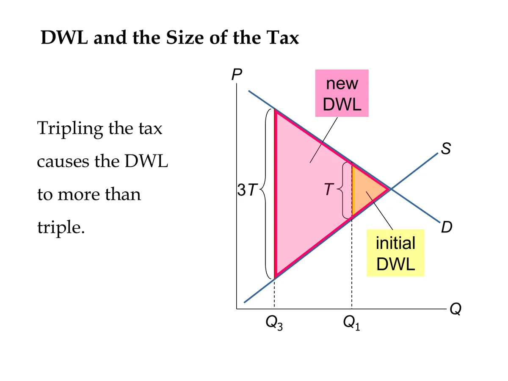
同一实验再做一次：税率加到 3T。
课件备注：新的 DWL 是原来的九倍，而税只大了三倍。3×3＝9，还是那个平方法则。
把这两页的数字放在一起：
| 税率 | DWL（相对基准） |
|---|---|
| T | 1 倍 |
| 2T | 4 倍 |
| 3T | 9 倍 |
这张表是整个「税收成本」讨论的骨架。它意味着：小额税收很便宜，大额税收极其昂贵。政策含义下一页给。
幻灯片原文 / 板书
Q3 --- DWL and the Size of the Tax --- P --- Q --- D --- S --- Q1 --- 3T --- T --- Tripling the tax causes the DWL to more than triple. --- initial DWL --- new DWL
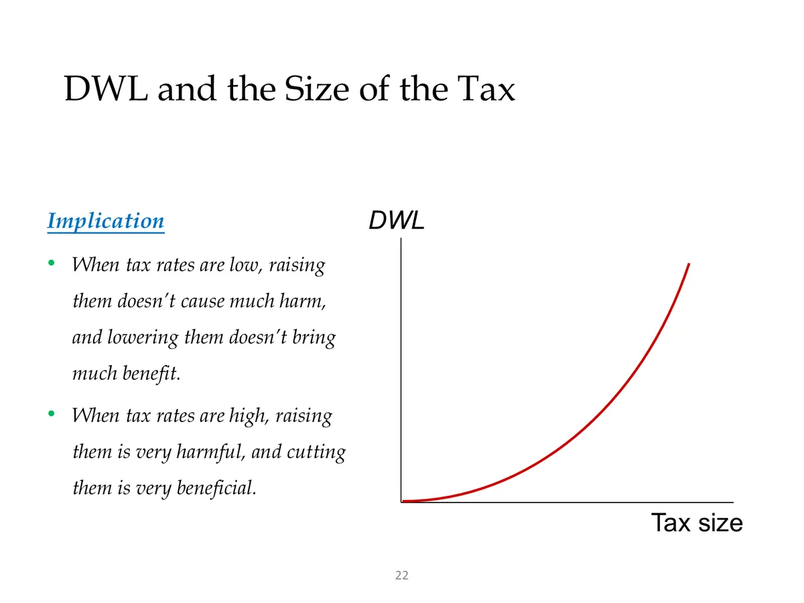
把上面两点连成一条曲线：横轴是税率，纵轴是 DWL，曲线从原点出发，越往右越陡——这就是「平方关系」的几何样子。
绿色框里的政策含义（课件备注说明它不在教材里，仅供理解，指的是对总剩余的影响）：
税率低时，加税造成的伤害不大，减税带来的好处也不大；税率高时，加税非常有害，减税非常有利。
用更白的话说：小税可以随便加，大税动一下都疼。这也解释了为什么现实中的税制改革，往往集中在边际税率最高的那几档上。
幻灯片原文 / 板书
22 --- DWL and the Size of the Tax --- DWL --- Tax size --- Implication When tax rates are low, raising them doesn’t cause much harm, and lowering them doesn’t bring much benefit. When tax rates are high, raising them is very harmful, and cutting them is very beneficial.
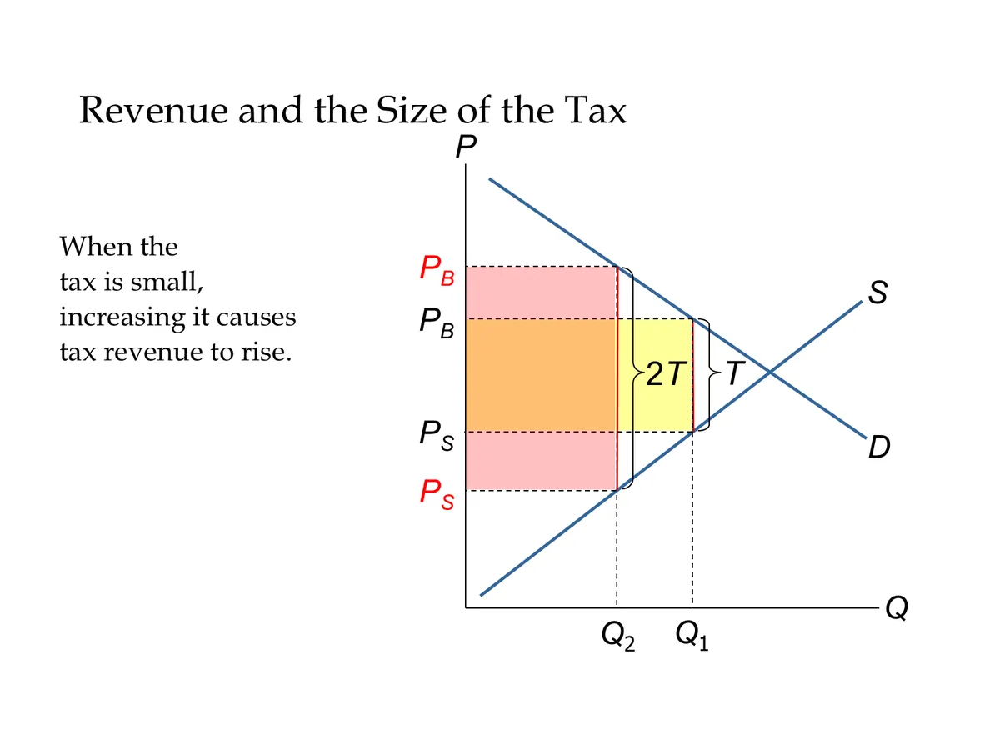
现在换一个问题：政府能收上来多少钱？
图上税率为 T，税收收入＝每单位税额 × 成交数量，就是那个黄色长方形（高 T、宽 Q1）。
把税加到 2T。注意两件事同时发生：每单位收得更多了（高变大），成交量更少了（宽变小）。课件备注：粉色的 2T 长方形比黄色的大。
所以在低税率区间，加税 → 收入增加。原因很直白：这个阶段成交量掉得还不够多，抵不过单位税额的上升。
下一页看反方向。
幻灯片原文 / 板书
Q2 --- Revenue and the Size of the Tax --- P --- Q --- D --- S --- Q1 --- PB --- PS --- PB --- PS --- 2T --- T --- When the tax is small, increasing it causes tax revenue to rise. --- 0
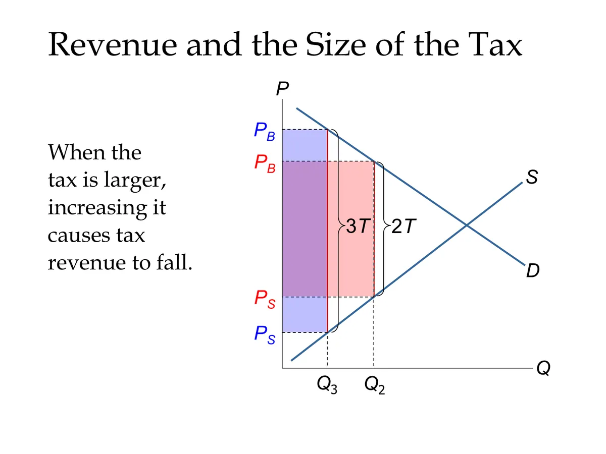
再把税加到 3T，结论翻转：蓝紫色的长方形比粉色的小了。
税再大一些，加税反而使税收收入下降。
机制：税率已经很高，成交量被压得很惨（宽快速萎缩），单位税额那点增加补不回来。数学上，收入＝T × Q(T)，而 Q 对 T 的反应是加速的。
于是收入随税率的变化不是单调的：先升，后降，中间有个最高点。这个最高点所在的位置，正是下一页要命名的那条曲线。
幻灯片原文 / 板书
Q3 --- Revenue and the Size of the Tax --- P --- Q --- D --- S --- Q2 --- PB --- PS --- PB --- PS --- 3T --- 2T --- When the tax is larger, increasing it causes tax revenue to fall. --- 0
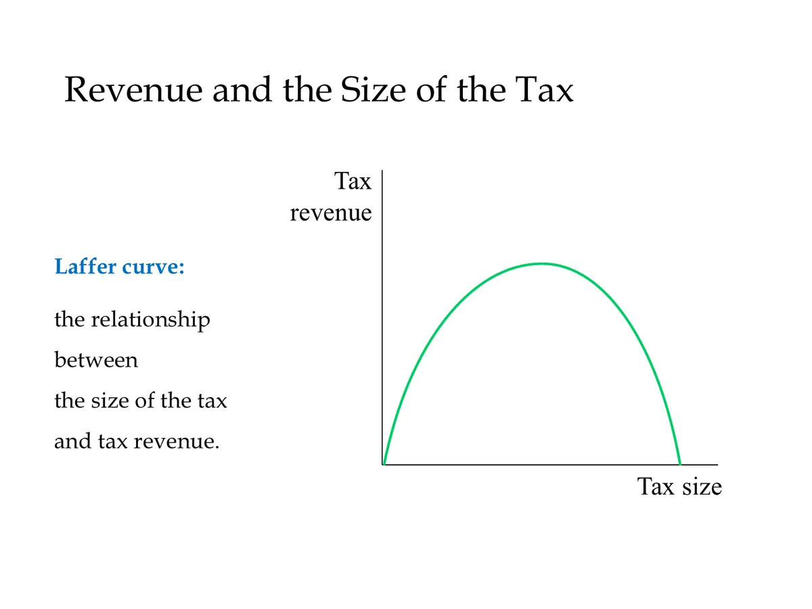
命名：
- 拉弗曲线（Laffer curve）：税率大小与税收收入之间的关系。
形状是倒 U：从原点上升，到峰值后下降。课件图上它是对称的、峰值在正中间，但备注明确提醒：现实不必如此，我们根本不知道峰值在哪——可能是 20%，也可能是 200%，而且不同商品不一样。
老师补充：这条曲线 1980 年代因供给学派和里根减税而名声大噪。政策含义常被简化成「减税能增税」，但那只在峰值右侧成立；峰值左侧减税，收入一定下降。
幻灯片原文 / 板书
Laffer curve: the relationship between the size of the tax and tax revenue. --- Revenue and the Size of the Tax --- Tax size --- Tax revenue --- 0
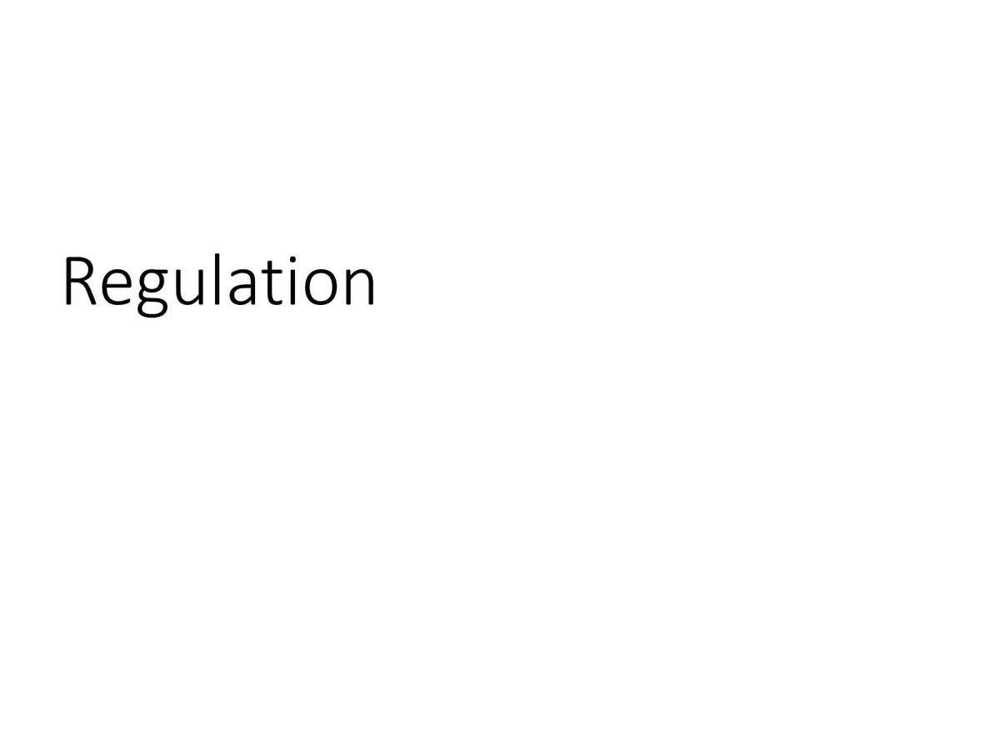
这里换章节。前半讲我们用「价格」看政府——税是一种价格楔子；后半讲我们用「数量」看政府——管制是直接规定你能做多少、能收多少钱。
课件备注里那句「你现在已经理解了买者的行为」是上一版留下的模板话，可以忽略。
往下四页（P27–P29）先给管制的定义和理论依据，然后用一条中国新闻把我们从教科书拽回现实。
幻灯片原文 / 板书
Regulation
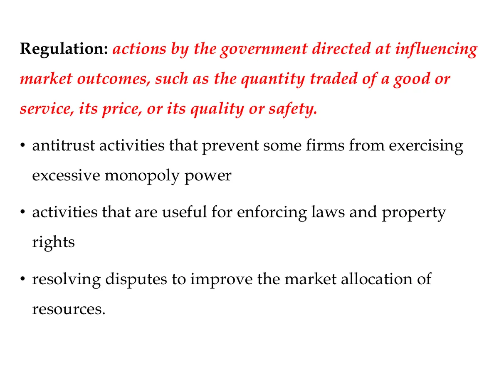
定义：
- 管制（regulation）：政府为影响市场结果而采取的行动，对象可以是成交量、价格，也可以是质量与安全。
课件列了三类常见管制：
注意这个定义很宽：它不只是「禁止」，也包括「要求披露」「设定标准」。凡是政府用手直接拨动市场结果的，都算。
幻灯片原文 / 板书
Regulation: actions by the government directed at influencing market outcomes, such as the quantity traded of a good or service, its price, or its quality or safety. antitrust activities that prevent some firms from exercising excessive monopoly power activities that are useful for enforcing laws and property rights resolving disputes to improve the market allocation of resources.
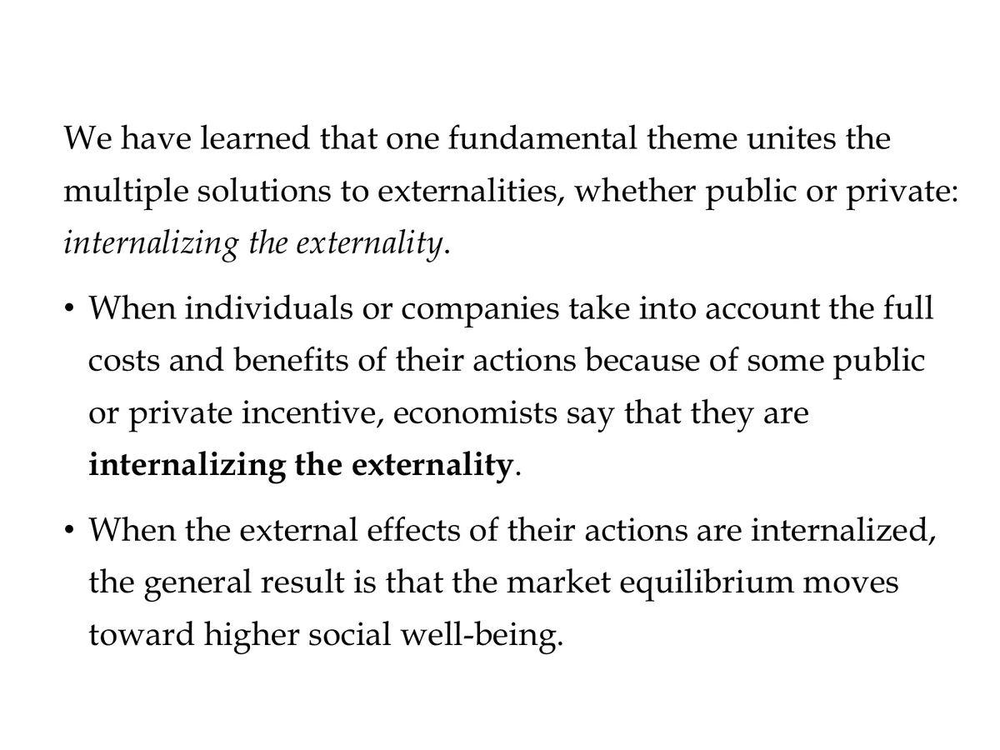
这一页其实是上一讲（外部性）的收尾，也是理解管制的钥匙。
外部性问题的统一解法只有一个词：内部化（internalizing the externality）。当个人或企业因为某种公共或私人激励，把自己行为的全部成本与收益都算进来时，就说外部性被内部化了。
结果：市场均衡会朝着更高的社会福利移动。
为什么在这里讲？因为政府干预的正当性就建立在这句话上。记住这个标准，后面批评政府时用的也是同一个标准：它到底有没有把成本算对。
幻灯片原文 / 板书
We have learned that one fundamental theme unites the multiple solutions to externalities, whether public or private: internalizing the externality. When individuals or companies take into account the full costs and benefits of their actions because of some public or private incentive, economists say that they are internalizing the externality. When the external effects of their actions are internalized, the general result is that the market equilibrium moves toward higher social well-being.
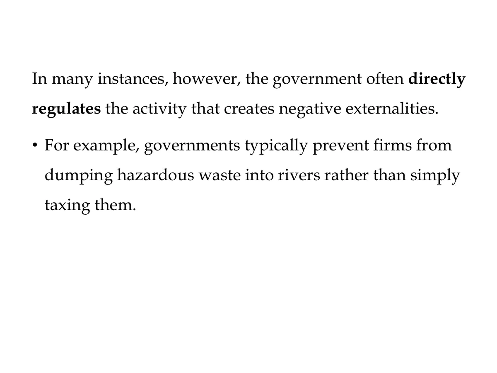
但现实里，政府纠正外部性最常用的手段不是庇古税，而是直接管制。
课件的例子很典型：政府通常直接禁止企业把危险废物倒进河里，而不是「倒一吨收多少钱」。
为什么选禁止而不是征税？老师补充三点：
- 有些损害的货币价值无法估计，定价反而显得荒谬（一条河值多少钱？）；
- 禁止的执行更简单——看到排口就能罚，不需要测量边际损害；
- 但禁止放弃了成本有效性：它不区分「减排便宜的企业」和「减排昂贵的企业」，一律不许排。
幻灯片原文 / 板书
In many instances, however, the government often directly regulates the activity that creates negative externalities. For example, governments typically prevent firms from dumping hazardous waste into rivers rather than simply taxing them.
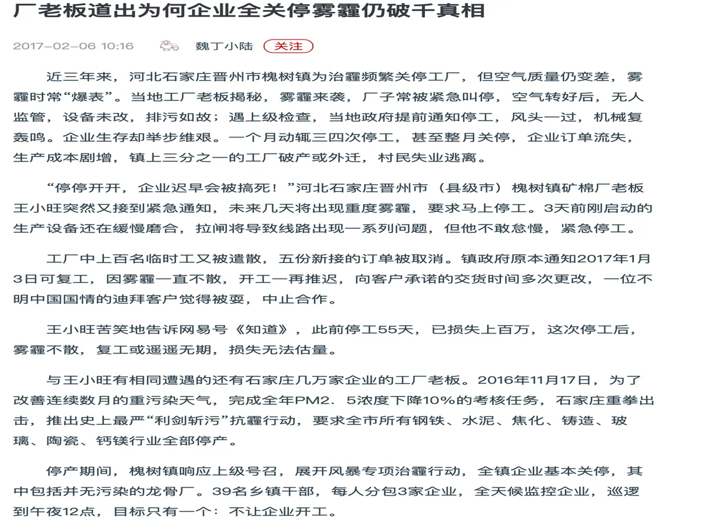
这一页是一张新闻截图，标题是《厂老板道出为何企业全关停雾霾仍破千真相》，2017 年 2 月 6 日，网易。
内容摘要：
- 地点：河北石家庄晋州市槐树镇。为治霾频繁关停工厂，空气质量仍然「爆表」。
- 手法：上级检查来了就停工，风头一过机器复鸣；当地政府还会提前通知企业停工。
- 代价：一个月停三四次，甚至整月关停；订单流失、成本剧增，全镇三分之一的工厂破产或外迁。
- 细节：39 名乡镇干部每人包 3 家企业，全天候监控、巡逻到午夜 12 点，目标只有一个——不让企业开工。
这张图要说明：命令控制型管制在执行端会遇到信息不对称与激励错位——监管者要的是「检查时好看」，企业要的是「活下去」。
幻灯片原文 / 板书
厂老板道出为何企业全关停雾霾仍破千真相
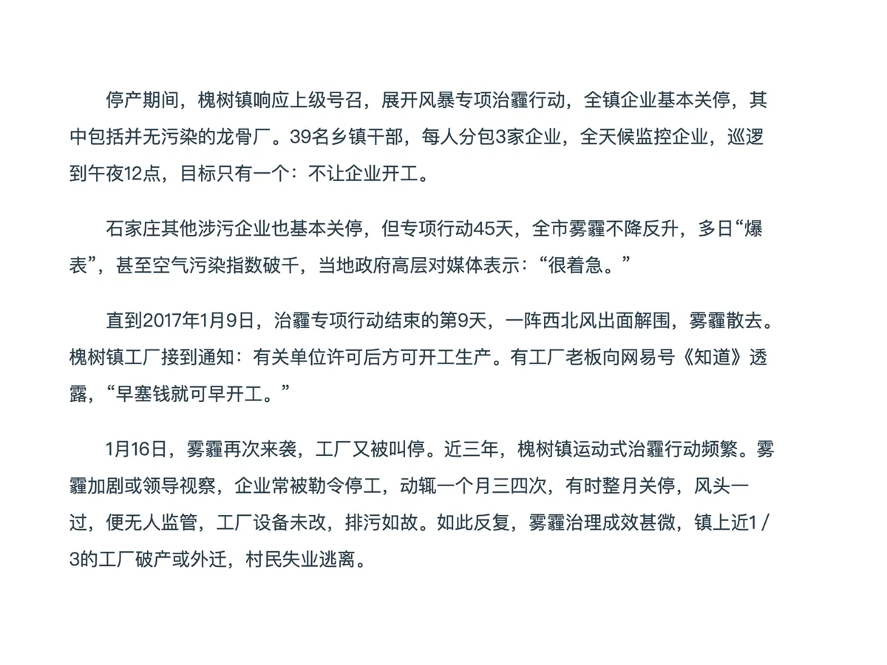
这是一张空白页，功能是给课堂一个停顿。
前一页的新闻留下一个不舒服的问题：既然「一律关停」既没治好霾，又打垮了三分之一的工厂，那政府到底该怎么管？
答案不在情绪里，在机制里。接下来四页做三件事：给直接管制下定义、看它做对了什么（FDA）、再做一个「物理学家短缺」的思想实验，看它在数量上会错到什么程度。
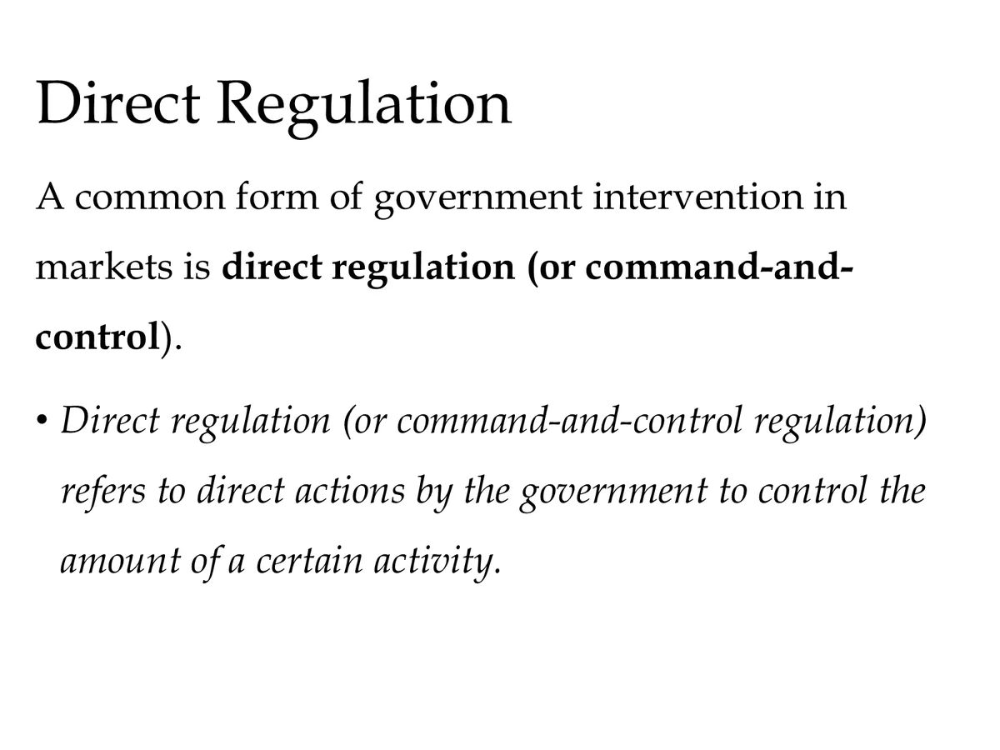
定义：
- 直接管制（direct regulation），也叫命令与控制型管制（command-and-control）：政府直接采取行动，控制某种活动的数量。
关键词是「直接」和「数量」。它不改变价格信号让人们自己调整，而是规定一个数额：你能捕多少鱼、你能排多少污、这栋楼能盖几层。
对比一下税：税是「用价格劝你少做」，管制是「用命令不许你做」。前者给企业选择权（交税继续排，或者减排省钱），后者不给。这个区别决定了后面所有的效率评价。
幻灯片原文 / 板书
Direct Regulation --- A common form of government intervention in markets is direct regulation (or command-and-control). Direct regulation (or command-and-control regulation) refers to direct actions by the government to control the amount of a certain activity.
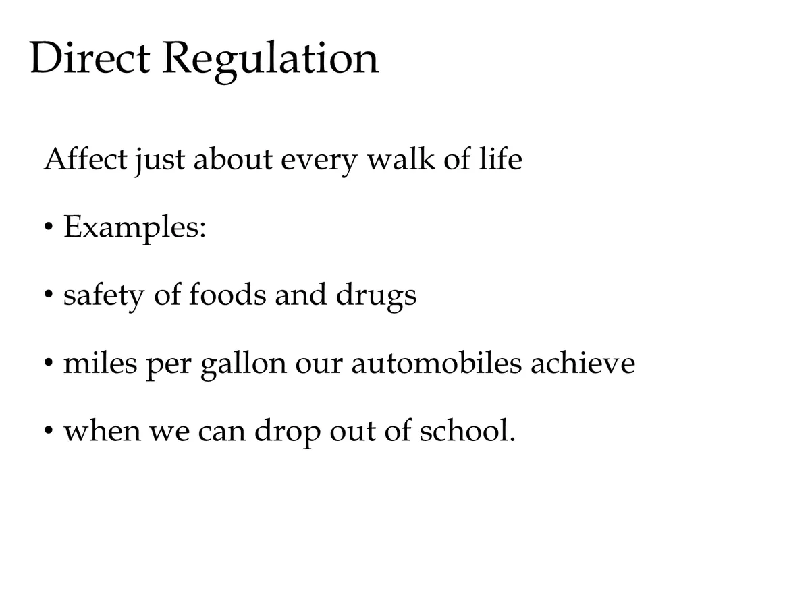
直接管制的覆盖面，比大多数人想的大得多。课件说它影响「生活的每一个角落」，举了三例：
- 食品药品安全：什么能上市、要做什么试验；
- 汽车油耗：每加仑油必须跑多少英里（miles per gallon）；
- 什么时候可以辍学：义务教育年限，规定你必须在学校里待到几岁。
注意第三个例子：它不是市场管制，而是直接限制个人的选择集。这一点很重要——管制不只针对企业，也针对你我。
下一张请出一位「模范管制者」。
幻灯片原文 / 板书
Direct Regulation --- Affect just about every walk of life Examples: safety of foods and drugs miles per gallon our automobiles achieve when we can drop out of school.
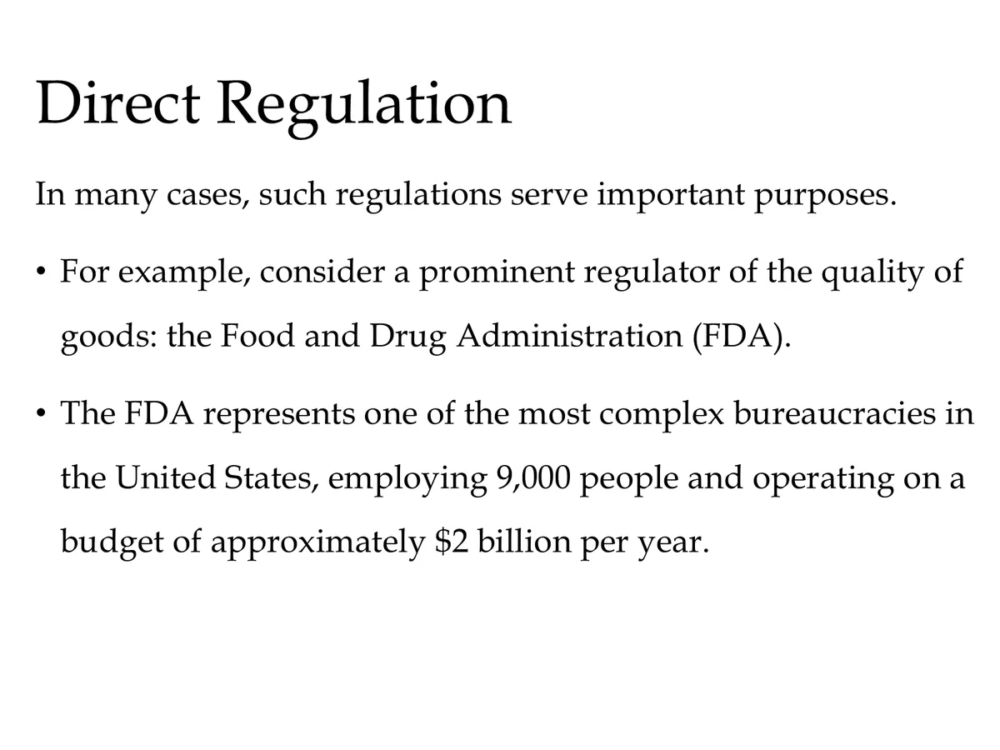
正面案例：美国食品药品监督管理局（Food and Drug Administration, FDA）。
数字要记住：雇员约 9000 人，年度预算约 20 亿美元，是美国最复杂的官僚机构之一。
课件先给规模，是有用意的：它不是免费的。9000 人的工资、20 亿美元的预算，都是社会资源从别的用途上挪过来的。这笔账我们到 P52 还会再算一次。
但规模本身不构成批评。下一页讲它做对了什么。
幻灯片原文 / 板书
Direct Regulation --- In many cases, such regulations serve important purposes. For example, consider a prominent regulator of the quality of goods: the Food and Drug Administration (FDA). The FDA represents one of the most complex bureaucracies in the United States, employing 9,000 people and operating on a budget of approximately $2 billion per year.
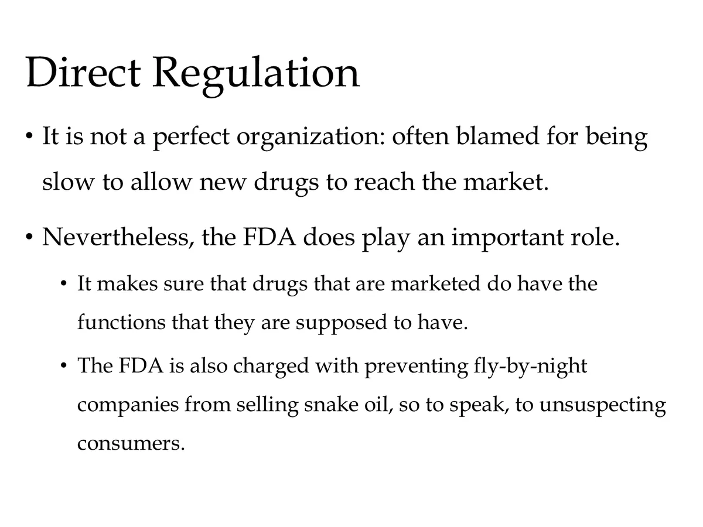
课件对 FDA 的评价是「不完美，但重要」。
批评：新药上市太慢（slow to allow new drugs to reach the market）。这一点经常被引用——审批每拖一年，就有病人等不到药。
辩护：
- 它确保上市的药品确实具有宣称的功能；
- 它挡住那些「打一枪换一个地方」的公司（fly-by-night companies），不让它们把万灵油（snake oil）卖给毫无防备的消费者。
这里的权衡很清楚：审批速度 vs 用药安全。任何缩短审批的改革，都是在用一部分安全性换时间。
幻灯片原文 / 板书
Direct Regulation --- It is not a perfect organization: often blamed for being slow to allow new drugs to reach the market. Nevertheless, the FDA does play an important role. It makes sure that drugs that are marketed do have the functions that they are supposed to have. The FDA is also charged with preventing fly-by-night companies from selling snake oil, so to speak, to unsuspecting consumers.
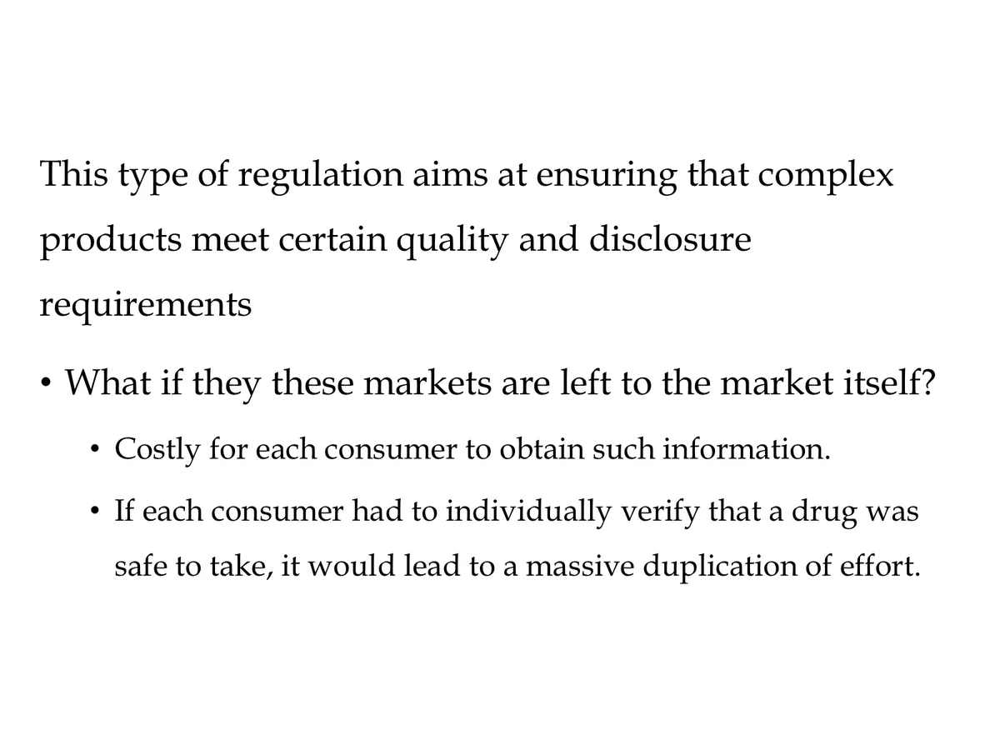
这一页回答「为什么不能交给市场自己」。
这类管制的目标是：确保复杂产品满足一定的质量与信息披露要求。
理由是信息成本：让每个消费者自己去验证一种药是否安全，成本极高；而且这是重复劳动——一亿个病人做同一件事，等于把同一份检测做一亿遍（massive duplication of effort）。
所以 FDA 的本质是：把「验证」这一件事集中生产，再用强制标准卖给所有人。这在经济学上是典型的信息不对称问题，也是公共品：一个人做的检测，所有人都受益，私人市场必然供给不足。
老师补充：这也解释了为什么这类管制的正当性很少被质疑，而价格管制却总被质疑——前者补的是信息，后者动的是价格。
幻灯片原文 / 板书
This type of regulation aims at ensuring that complex products meet certain quality and disclosure requirements What if they these markets are left to the market itself? Costly for each consumer to obtain such information. If each consumer had to individually verify that a drug was safe to take, it would lead to a massive duplication of effort.
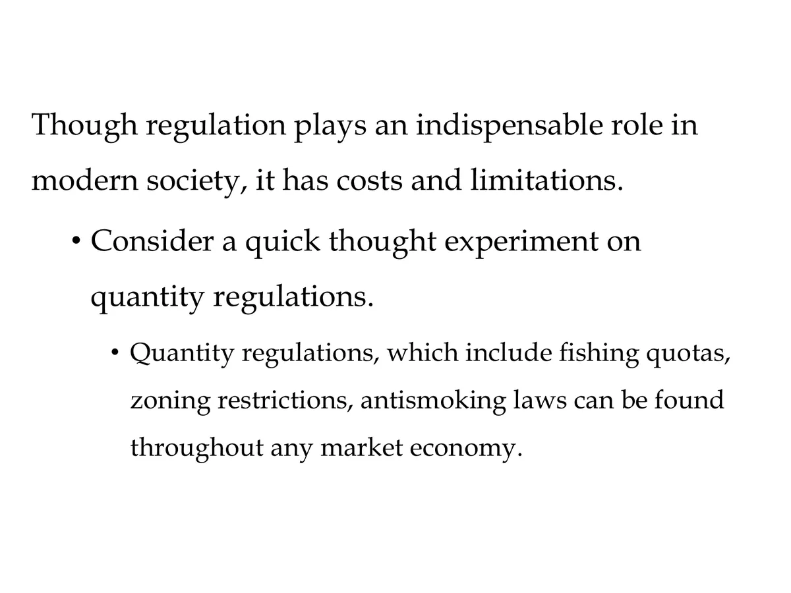
正面讲完，开始讲成本与局限。
课件先给一个思想实验（thought experiment），对象是数量管制（quantity regulation）。它举了三个日常例子：
- 捕鱼配额（fishing quotas）：一年只能捕多少吨；
- 区划限制（zoning restrictions）：这块地只能盖住宅，不能盖厂房；
- 禁烟法（antismoking laws）：哪些地方不许抽烟。
三者的共同点是：政府直接规定「多少」，而不是「多贵」。
下一页开始做实验：假设政府认定物理学家不够用。
幻灯片原文 / 板书
Though regulation plays an indispensable role in modern society, it has costs and limitations. Consider a quick thought experiment on quantity regulations. Quantity regulations, which include fishing quotas, zoning restrictions, antismoking laws can be found throughout any market economy.
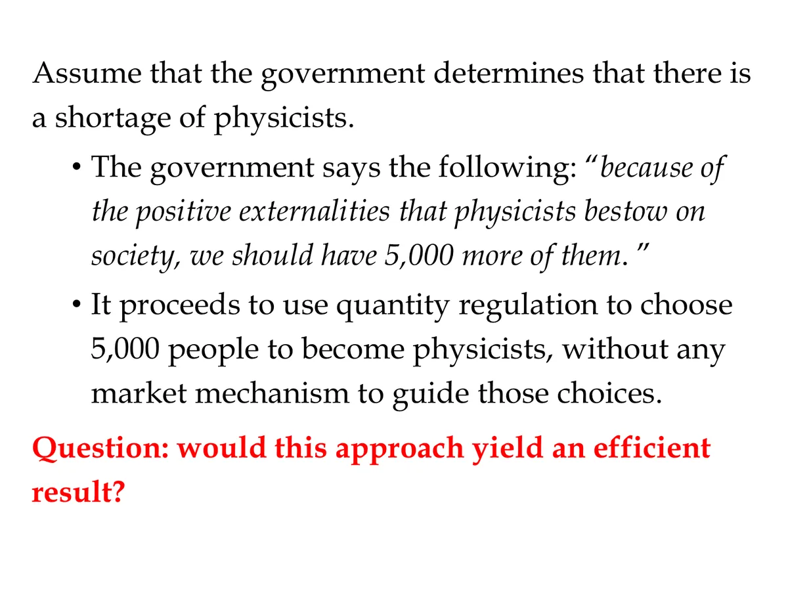
思想实验开始。
前提：政府判断社会物理学家短缺，理由是物理学家给社会带来正外部性（positive externalities），所以「我们应该多 5000 个物理学家」。
手段：用数量管制——由政府挑 5000 个人去读物理，中间没有任何市场机制参与筛选。
问题：这样配出来的结果有效率吗？
先想清楚再翻页。提示：效率要求的是「把最有天赋的人放进物理系」，而政府手里没有「谁有天赋」这个信息。
幻灯片原文 / 板书
Assume that the government determines that there is a shortage of physicists. The government says the following: “because of the positive externalities that physicists bestow on society, we should have 5,000 more of them. ” It proceeds to use quantity regulation to choose 5,000 people to become physicists, without any market mechanism to guide those choices. Question: would this approach yield an efficient result?
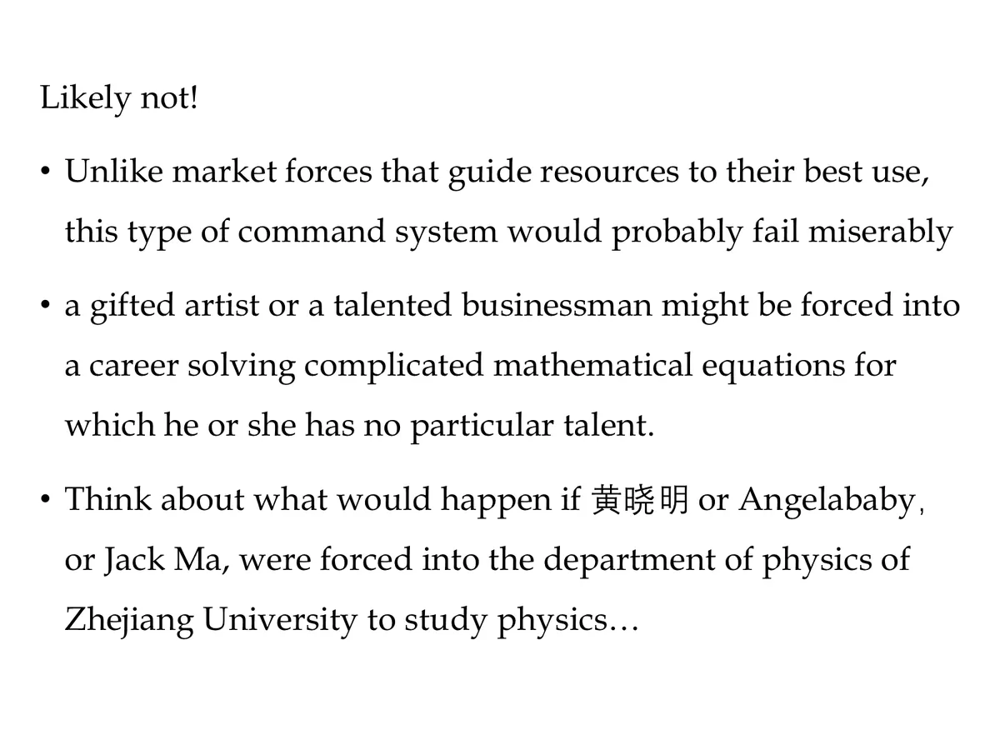
答案：几乎肯定不有效率。
课件的论证：市场机制的作用是把资源配置到最能发挥其价值的用途上；命令系统做不到这一点，很可能惨败（fail miserably）。
具体后果：一个有天赋的艺术家、一个有商业才能的生意人，可能被强行塞进「解复杂数学方程」的职业生涯，而他对此毫无天赋。
课件用了一个很好笑的例子：想象把黄晓明、Angelababy 或者 马云（Jack Ma）强行送进浙江大学物理系去学物理。
笑完要记住机制：管制者不掌握分散在个人身上的信息。谁适合做什么，只有当事人自己（和他的选择）知道。
幻灯片原文 / 板书
Likely not! Unlike market forces that guide resources to their best use, this type of command system would probably fail miserably a gifted artist or a talented businessman might be forced into a career solving complicated mathematical equations for which he or she has no particular talent. Think about what would happen if 黄晓明 or Angelababy，or Jack Ma, were forced into the department of physics of Zhejiang University to study physics…
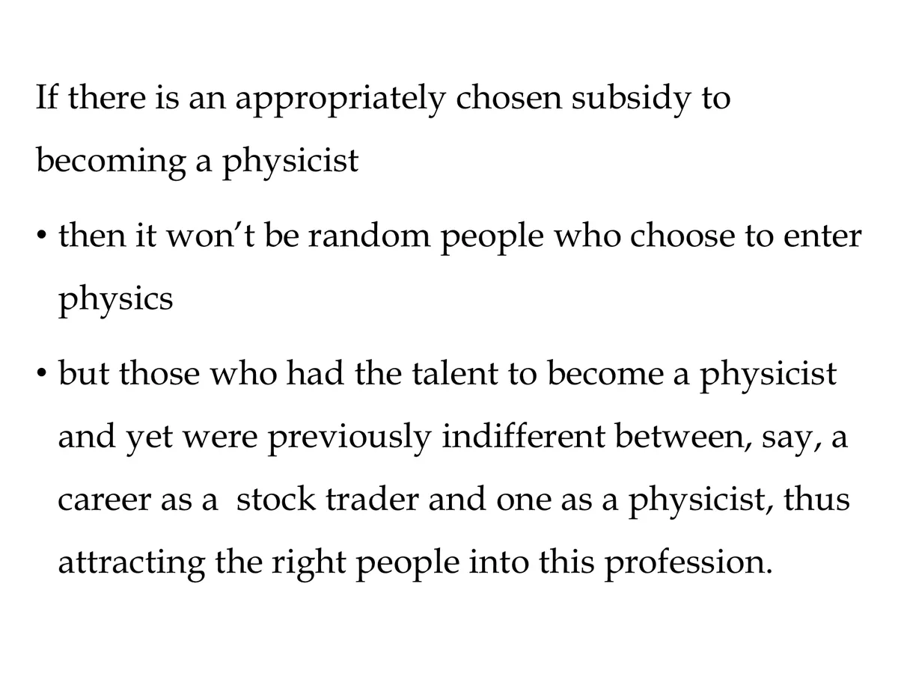
正解不是「不管」，而是换一种工具：补贴（subsidy）。
如果政府给「成为物理学家」一笔恰当设定的补贴，那么进入物理系的就不会是随机抽中的人，而是这样一群人：他们有成为物理学家的天赋，同时原本在「股票交易员」和「物理学家」之间恰好无差异。
补贴的作用是：把天平轻轻推一下，让那些本来就在犹豫的人选择物理。它没有强迫任何人，只是改变了相对价格。
课件备注点明：这就是庇古补贴（Pigouvian subsidy）——用市场力量让人在边际上把外部性内部化。
对比 P38：同样是「多 5000 个物理学家」，数量管制靠命令，补贴靠自我筛选（self-selection）。
幻灯片原文 / 板书
If there is an appropriately chosen subsidy to becoming a physicist then it won’t be random people who choose to enter physics but those who had the talent to become a physicist and yet were previously indifferent between, say, a career as a stock trader and one as a physicist, thus attracting the right people into this profession.
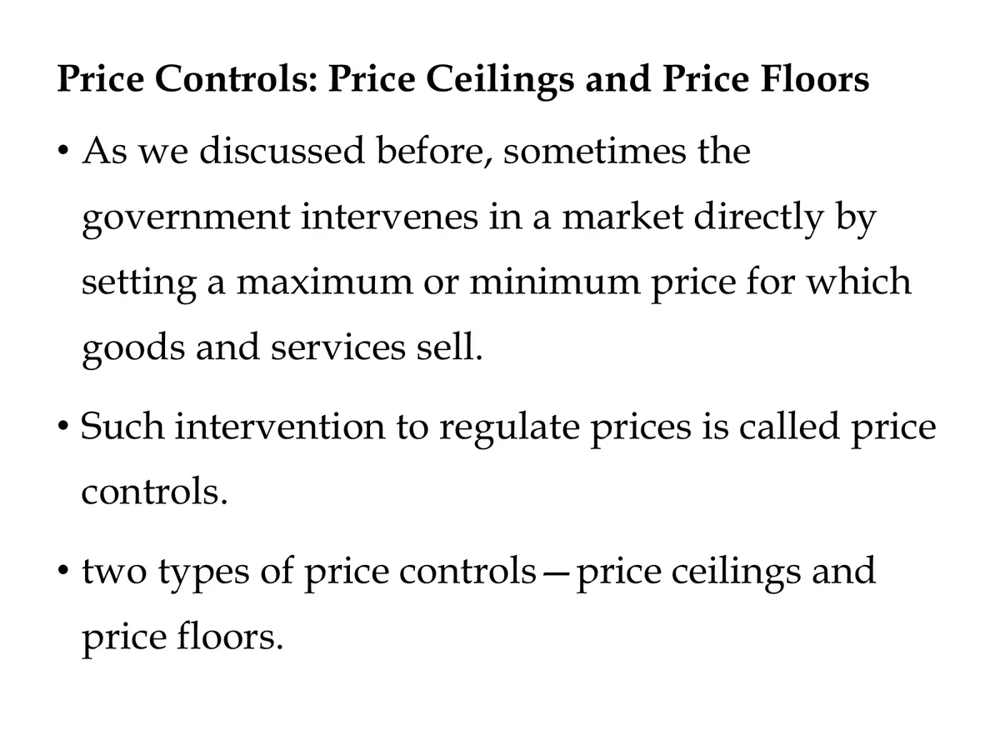
换工具：政府不再规定数量，而是规定价格。
- 价格管制（price controls）：政府为商品或服务设定最高价或最低价。
两种：
- 价格上限（price ceiling）：不许卖得比它更贵；
- 价格下限（price floor）：不许卖得比它更便宜。
这两个词每年都有人记反。记法：上限是盖子（压住价格），下限是地板（托住价格）。盖子只有低于均衡价时才有约束力，地板只有高于均衡价时才有约束力。
下面用房租管制把价格上限讲透。
幻灯片原文 / 板书
Price Controls: Price Ceilings and Price Floors As we discussed before, sometimes the government intervenes in a market directly by setting a maximum or minimum price for which goods and services sell. Such intervention to regulate prices is called price controls. two types of price controls—price ceilings and price floors.
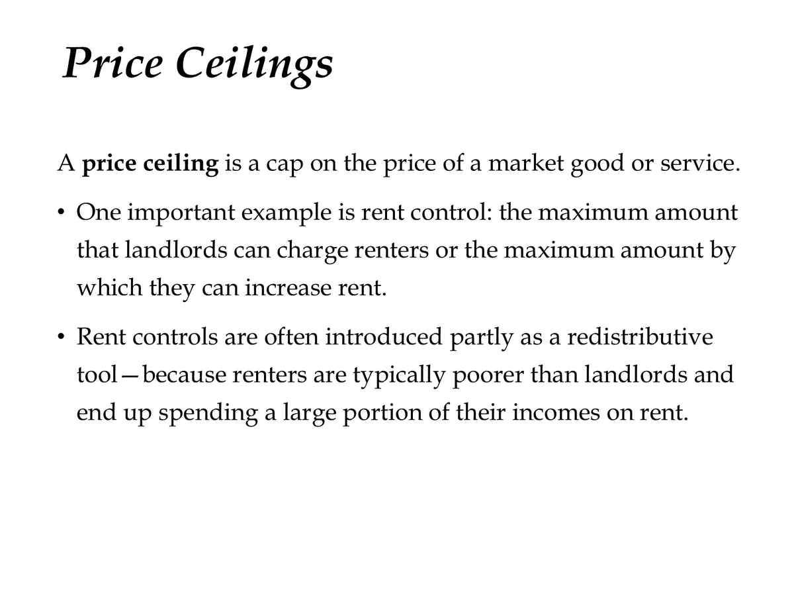
定义与动机。
价格上限（price ceiling）：对市场价格设定一个上限。
最重要的例子是房租管制（rent control）：房东能收的最高租金，或者每年最多能涨多少。
课件特别点出动机：房租管制常常被当作再分配工具（redistributive tool）引入——因为租客通常比房东穷，而且房租占他们收入的很大一块。
这句话很重要。它意味着：房租管制从一开始就不是效率工具，而是公平工具。用效率标准去批评它，等于用尺子量重量。但它确实有效率代价，下一页开始算。
幻灯片原文 / 板书
Price Ceilings --- A price ceiling is a cap on the price of a market good or service. One important example is rent control: the maximum amount that landlords can charge renters or the maximum amount by which they can increase rent. Rent controls are often introduced partly as a redistributive tool—because renters are typically poorer than landlords and end up spending a large portion of their incomes on rent.
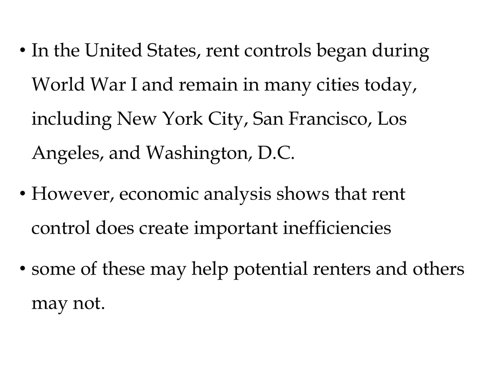
历史与现状：美国的房租管制始于第一次世界大战期间，今天仍存在于许多城市，包括纽约、旧金山、洛杉矶、华盛顿特区。
课件随后给出判断：经济分析表明房租管制确实造成了重要的无效率（inefficiencies）。
最后一句很微妙：这些无效率「有些帮助了潜在租客，有些没有」（some of these may help potential renters and others may not）。
说白了，政策不是简单地「伤害所有人」，它是在租客内部、房东内部重新分配，同时把总额做小。下一页的图会把这句话变成面积。
幻灯片原文 / 板书
In the United States, rent controls began during World War I and remain in many cities today, including New York City, San Francisco, Los Angeles, and Washington, D.C. However, economic analysis shows that rent control does create important inefficiencies some of these may help potential renters and others may not.
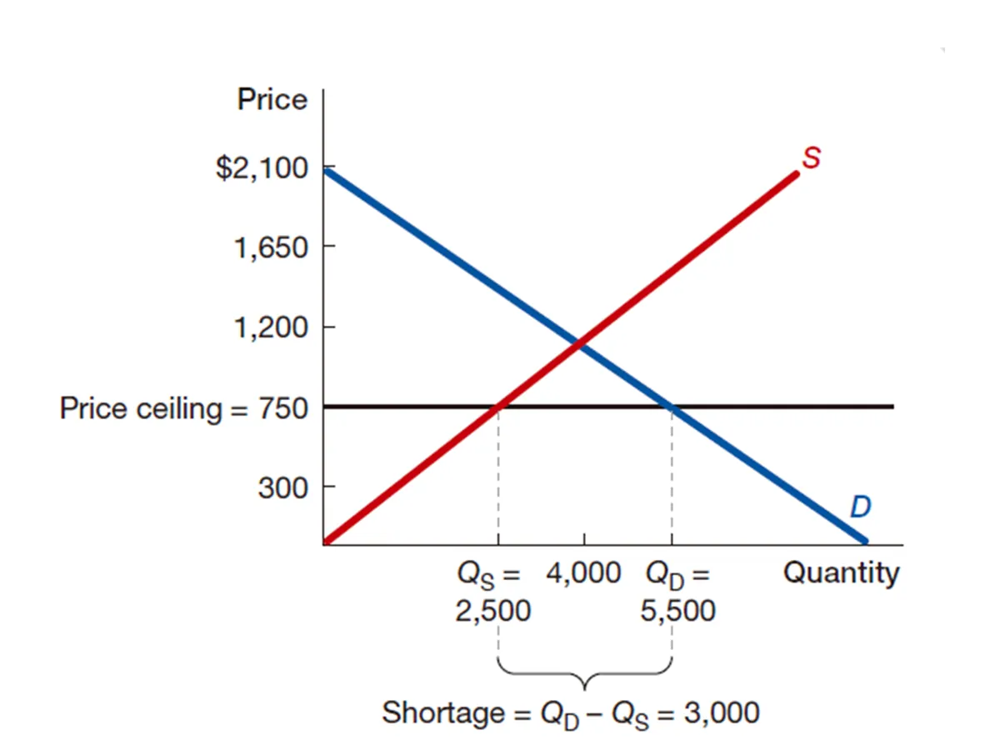
这张图给数字。
- 无管制时：租金 1200 美元/月，成交量 4000 套。
- 政府设价格上限 750 美元。
- 750 这条横线一画，供给量由 S 曲线读得 Q_S = 2500 套，需求量由 D 曲线读得 Q_D = 5500 套。
- 短缺（shortage）＝ Q_D − Q_S ＝ 5500 − 2500 ＝ 3000 套。
读图要点：价格上限不改变供需曲线，只是把价格按在均衡之下。价格被按低，供给减少（房东不愿出租）、需求增加（想租的人变多），缺口就是那条双箭头。
3000 套的缺口不会消失，它会长出别的东西：排队、找关系、黑市、押金、钥匙费。
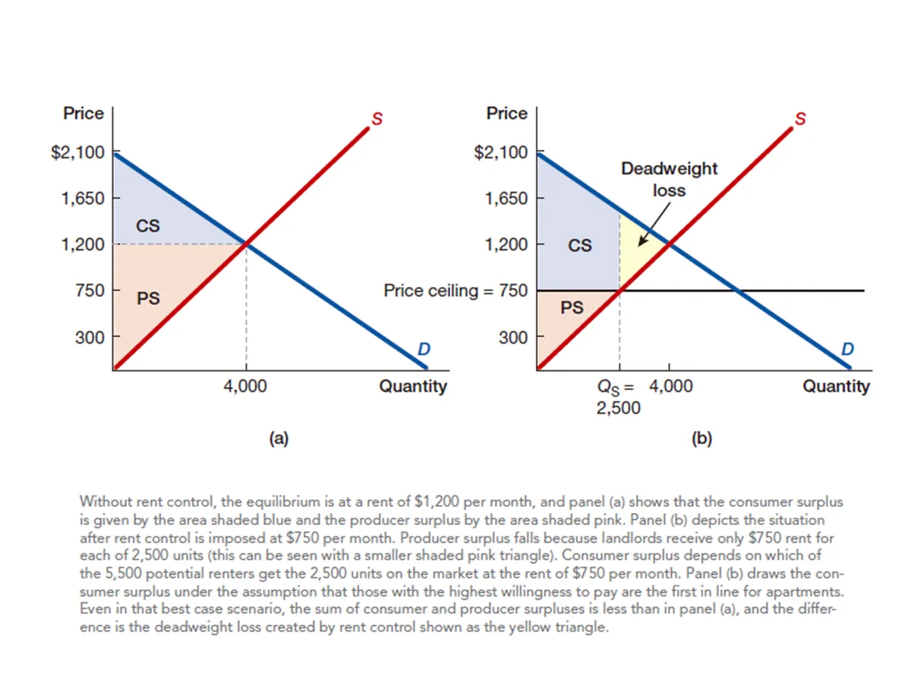
这一页把福利算清楚，两个面板。
(a) 无管制：租金 1200，成交量 4000。蓝色三角是 CS，粉色三角是 PS，二者相加是社会总剩余。
(b) 上限 750：
- PS 缩小：房东只收到 750，且只租出 2500 套，粉三角明显变小；
- CS 的变化不直观：5500 个想租的人里只有 2500 个拿到房子。图里假设「出价最高的人先排队」，即便在这种最有利的假设下，CS 也只多出那块梯形；
- 黄色三角形是 DWL：那 1500 套（4000−2500）本来双方都愿意成交，现在没了。
结论：即便按最有利租客的假设，CS＋PS 的总和也小于 (a)，差额就是那个黄三角。
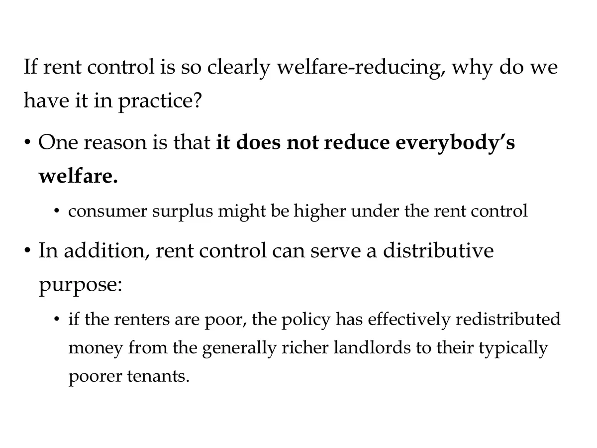
既然福利明显下降，为什么现实里还有房租管制？这一页给两个理由，都很硬。
第一，它不是让所有人变穷。 拿到房子的那 2500 户租客，租金从 1200 降到 750，消费者剩余可能反而更高（consumer surplus might be higher under the rent control）。受损的是房东和没租到房子的人。所以「总剩余下降」和「没有人受益」是两句话。
第二，它有再分配功能。 如果租客穷、房东富，这个政策事实上把钱从较富的房东转给了较穷的租客。
老师补充：这就是为什么用「效率」去说服租客几乎没用——他算的是自己的账，不是社会总账。
幻灯片原文 / 板书
If rent control is so clearly welfare-reducing, why do we have it in practice? One reason is that it does not reduce everybody’s welfare. consumer surplus might be higher under the rent control In addition, rent control can serve a distributive purpose: if the renters are poor, the policy has effectively redistributed money from the generally richer landlords to their typically poorer tenants.
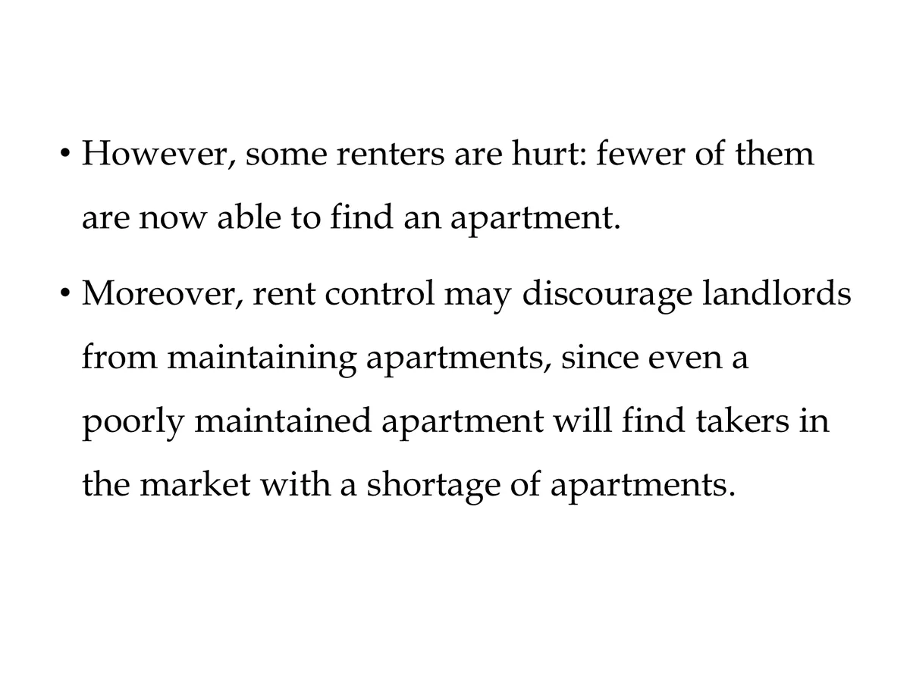
但代价具体落在谁头上？这一页点了两处，都是租客自己。
- 一部分租客被挡在门外：房子变少，能租到的人变少（2500 < 4000）。谁租不到？往往是新来的、没有关系网的、议价能力最弱的人。政策保护了「已经在里面的人」，牺牲了「想进来的人」。
- 房东不再维护房子：租金被压住，修房子的钱收不回来；而在短缺的市场里，再破的房子也有人要——所以不修也不愁租。
这两条合起来是一个典型 pattern：价格管制把「价格竞争」换成了「非价格竞争」——排队、关系、质量下降。价格没有消失，只是换了货币。
幻灯片原文 / 板书
However, some renters are hurt: fewer of them are now able to find an apartment. Moreover, rent control may discourage landlords from maintaining apartments, since even a poorly maintained apartment will find takers in the market with a shortage of apartments.
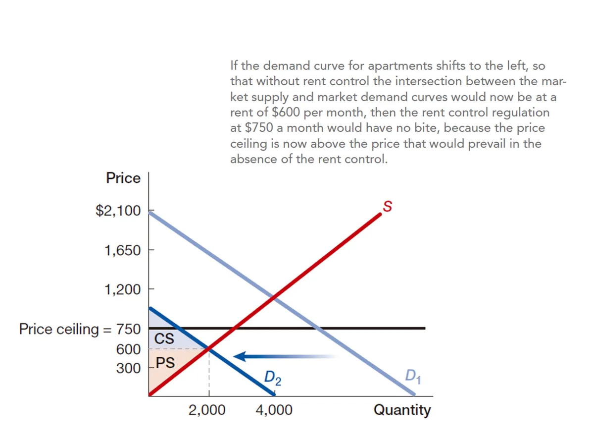
这一页讲价格上限的失效条件，很容易考。
假设需求曲线左移（比如人口流出、新房大量上市），无管制时的均衡租金跌到 600 美元，成交量 2000 套。
此时上限 750 美元 已经高于市场均衡价——它没有约束力（has no bite）。既然市场自己只会收到 600，规定「不许超过 750」就等于什么都没规定，成交量仍是 2000。
一句话：价格上限只在低于均衡价格时才有约束力（binding）。同理，价格下限只在高于均衡价格时才 binding。
老师补充：这也解释了政策的政治经济学——房租管制在房租上涨的城市最受欢迎，在房租下跌的城市形同虚设，但法律往往还留着。
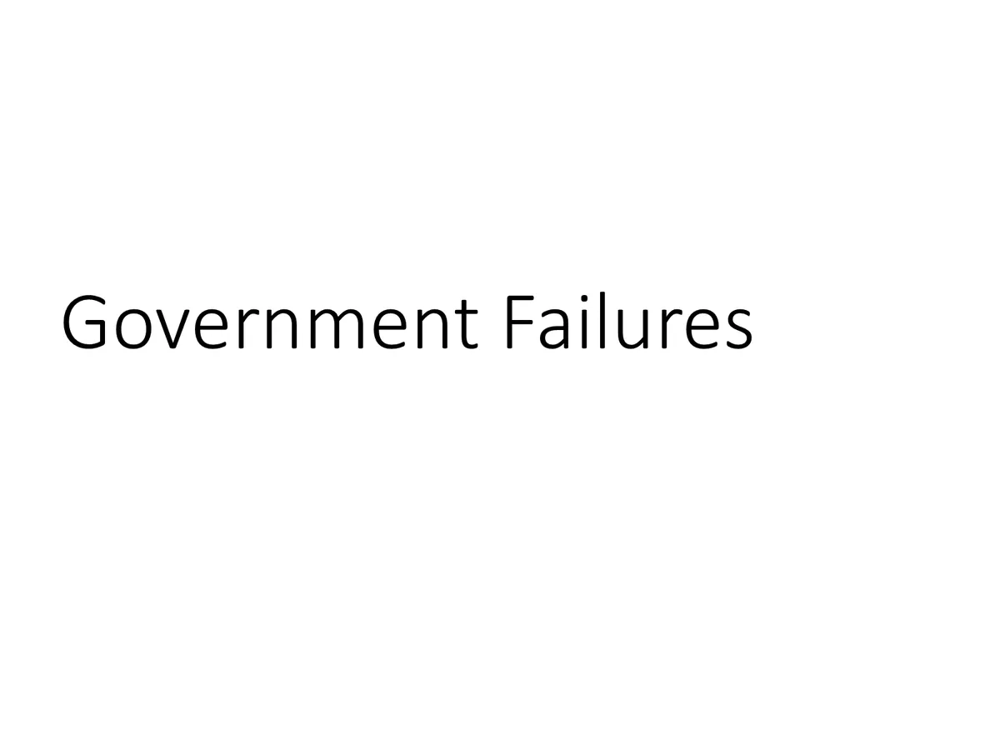
第四部分开始：政府失灵（government failures）。
到这里，我们已经把政府的工具箱翻了一遍：税、补贴、管制、价格上限。每一件都有明确的政策目标，有些还是市场正常运转的前提。
接下来的问题是：既然工具都有成本，这些成本加起来有多大？有没有可能，政府为了修一个小毛病，制造了一个更大的毛病？
这就是「政府失灵」这个词要装的东西。
幻灯片原文 / 板书
Government Failures
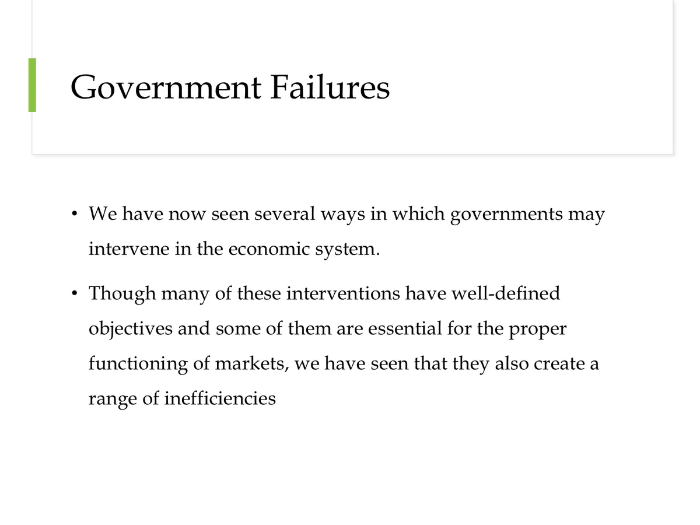
这一页做小结，也是转向。
课件承认两件事同时成立：
- 这些干预有明确的目标，其中一些对市场的正常运转不可或缺（比如产权保护、食品药品监管）；
- 但它们同时制造了一系列无效率。
注意这个句式的严谨：不是「政府不好」，而是「政府有成本」。承认成本，才谈得上权衡。
下一页引出更激烈的立场。
幻灯片原文 / 板书
Government Failures --- We have now seen several ways in which governments may intervene in the economic system. Though many of these interventions have well-defined objectives and some of them are essential for the proper functioning of markets, we have seen that they also create a range of inefficiencies
立场登场：有一部分人认为，政府在经济中的角色应该被最小化。
他们强调的不仅是前面算过的那些成本，还有一整套与政府干预相关的无效率，这套东西有个名字：
- 政府失灵（government failures）：政府干预本身带来的、而非市场带来的效率损失。
这个词是相对于市场失灵（market failure）造的。逻辑对称：市场会失灵，所以要政府；政府也会失灵，所以要市场。哪一边更小，是经验问题，不是信仰问题。
老师补一句：这门课不要求你选边，要求你能把两边的账都算出来。
幻灯片原文 / 板书
Government Failures --- Some people believe that the role of the government in the economy should be minimized They emphasize not only these costs but also a broader set of inefficiencies associated with government interventions, sometimes called government failures
政府失灵的第一项：官僚机构的直接成本（the direct costs of bureaucracies）。
机制很朴素：每一个政府项目都需要官僚机构来监督执行，而官僚要发工资。
更重要的成本是机会成本：这些人被从生产部门抽走了。课件举的例子很具体——他们本来可以在制造厂工作，或者在淘宝网（Taobao.com）当经理，现在却在做监管或收税。
注意这句话不是在骂官僚，它只是在说：一个人的时间只有一份，用在这里就不能用在那里。
下一页把这个逻辑说完整。
幻灯片原文 / 板书
The Direct Costs of Bureaucracies --- Every government program needs bureaucrats and bureaucracies to monitor its implementation. Bureaucrats have to be paid. They are also taken out of the productive sectors of the economy. That is, instead of working at a manufacturing plant or as a manager at Taobao.com, the bureaucrats are engaged in regulation or tax collection.
这一页防止误读，说得很客气：
这并不是说官僚在做的事没有生产力——他们在执行监管。
关键在于反事实（counterfactual）：如果没有这项监管，这些劳动者本可以在其他岗位上生产。这部分「失去的产出」就是政府工作的机会成本。
于是结论升级：政府的成本不只是预算上的工资，而是整个社会的时间与才能的配置（the allocation of time and talent）。
老师补充：这条对考试很重要。分析任何政府项目，都要问「这些人、这笔钱，最好的替代用途是什么」，而不只问「花了多少」。
幻灯片原文 / 板书
The Direct Costs of Bureaucracies --- This observation does not suggest that bureaucrats are unproductive at what they do—they implement regulation. However, in the absence of regulation, these workers would have been productive in other jobs and this lost in production represents the opportunity cost of government work. In this way, the allocation of time and talent of individuals to bureaucracy is an important cost of government.
更糟的是，这笔成本还会被低效率放大。
课件承认：各政府机构里有很多善意且高效的公务员；但同时也有——
- 排长队（long lines）；
- 随意的决定（arbitrary decisions）；
- 以及总有那么几个不太帮忙的员工（a few not-so-helpful employees）。
这些是大官僚机构里「我们早已习惯」的无效率。
经济学解释：政府机构缺少利润约束和退出机制——办得差不会破产，顾客也不能换一家。委托人（纳税人）与代理人（官僚）之间的信息不对称，使监督本身也要花成本。
幻灯片原文 / 板书
The Direct Costs of Bureaucracies --- What is worse is that this cost is increased by the fact that bureaucracies sometimes don’t function efficiently. Though the various government agencies employ many well-intentioned and efficient individuals, there are long lines, arbitrary decisions, and always a few not-so-helpful employees. These are the kinds of inefficiencies we have come to expect from big bureaucracies.
第二项：腐败（corruption）。
定义要一字不差地记住：
- 腐败：滥用公共资金，或为个人利益扭曲资源配置。
注意定义的后半句：腐败不一定表现为「钱进了谁的口袋」，也可以是「把资源配到了不该去的地方」——比如把工程批给亲戚的公司。后者更难查，危害也更大，因为它直接改变了资源配置。
老师补充：从经济学看，腐败相当于对经济活动征了一笔没有进入国库的税——它提高做生意的成本，却不提供任何公共服务。
幻灯片原文 / 板书
Corruption --- Equally as important is the corruption that large governments engender. Corruption refers to the misuse of public funds or the distortion of the allocation of resources for personal gain.
用外援数字把腐败的规模摆出来。
- 过去 60 年，发达国家向非洲转移的资金超过 1 万亿美元；
- 2014 年一年，流向所有国家的外援超过 1300 亿美元；
- 资金主要来自发达国家政府，也有相当一部分来自慈善机构。
这些钱的名义目标是扶贫、建学校、修医院。
问题在下一页：钱出发了，到得了吗？
幻灯片原文 / 板书
Corruption --- Consider one example—the billions of dollars that go annually to African governments as foreign aid. In the past 60 years, more than $1 trillion has been transferred from developed countries to Africa, and foreign aid to all countries in 2014 exceeded $130 billion. Much of it comes from governments of developed nations and a significant portion from charities.
答案很难看。
- 真正到达目的地的钱，可能只有 5% 到 15%；
- 一部分被运转援助机器的官僚系统低效吃掉；
- 更大一部分被腐败的政客与官僚截留（appropriated）。
具体研究：乌干达（Uganda）的教育拨款，只有 13% 真正到了学校。
课件的评价是：这类腐败「极端，但并不罕见」（extreme but not unusual）。
老师补充：这类数字常被用来论证「援助无用」。更准确的读法是：援助的漏损率决定它的边际效果——同样 1 亿美元，漏损 90% 和漏损 10% 是两种政策。
幻灯片原文 / 板书
Corruption --- Money that reaches its intended destination may be as little as from 5 percent to 15 percent Some eaten up by the inefficiencies of the bureaucracies that operate the foreign aid machine More is appropriated by corrupt politicians and bureaucrats. For example, a recent study found that only 13 percent of education grants reached Schools in Uganda. This type of corruption is extreme but not unusual.
这一页只有一张图，一个问题：猜猜这是什么建筑？
看图：一大片白色多层建筑群，对称布局，前方是大广场，带柱廊和坡屋顶，整体气势像政府机关或大型纪念建筑；旁边是马路与绿化。
先猜，再翻页。提示：它不在华盛顿，也不在任何一个富裕城市。
这张图的存在本身就是论证的一部分——盖楼的钱从哪来，和上一页的援助漏损是同一个问题。
幻灯片原文 / 板书
Guess what are these buildings?
答案：安徽省安庆市望江县的县政府办公楼。
- 望江县是全国贫困县；
- 这组楼被媒体称为「8.5 个美国白宫」；
- 占地 109 亩，建筑面积 5100 平方米，共 132 个房间；
- 时间：2012 年。
把数字放在一起读：一个国家级贫困县，盖了一栋相当于 8.5 个白宫的办公楼。
老师补充：这在经济学上叫公共资金的挪用（diversion of public funds）——它不一定进私人腰包，但把本该用于扶贫、教育、医疗的钱，变成了钢筋水泥。所以讨论政府失灵不能只算预算，还要看钱花在了哪里。
幻灯片原文 / 板书
Answer --- 8.5个美国白宫：望江县政府办公楼 安徽省安庆市望江县：全国贫困县 “白宫”占地109亩，建筑面积5100平方米，132个房间 2012
第二个中国案例：杨达才。
履历：男，汉族，1957 年 10 月生，陕西镇坪人，1982 年 1 月参加工作，1975 年 11 月入党，大学文化（延安大学政教系哲学专业），原任陕西省安全生产监督管理局局长、党组书记。
转折点：2012 年 8 月 26 日，延安交通事故现场，他因面带微笑被拍照上网，引发争议；网友随后指出他有多块名表。
结局：2013 年 8 月 30 日，西安中院在 3 号法庭公开开庭审理其受贿、巨额财产来源不明案；同年 9 月 5 日获刑 14 年。
要害不是「微笑」，而是信息：一个官员的消费水平与合法收入不匹配，本身就是可被公众识别的信号。
幻灯片原文 / 板书
杨达才，男，汉族，1957年10月生，陕西镇坪人，1982年1月参加工作，1975年11月加入中国共产党，大学文化（延安大学政教系哲学专业），原任陕西省安全生产监督管理局局长、党组书记。 2012年8月26日，杨达才在延安交通事故现场，因面含微笑被人拍照上网，引发争议并被网友指出杨达才有多块名表。 2013年8月30日，西安中级人民法院在3号法庭公开开庭审理被告人杨达才受贿、巨额财产来源不明一案。同年9月5日获刑14年。
防止一个常见误解：腐败只存在于发展中国家。
课件直接反驳：证据显示并非如此（the evidence suggests otherwise）。
例子：2008 年，美国有 15 位在任国会议员（fifteen sitting members of US Congress）正在接受刑事调查，多数涉及不当使用公共资金，或收受企业礼物而构成利益冲突（conflicts of interest）。
老师补充：把「腐败」等同于「发展中国家的问题」是一种舒服但错误的看法。制度能降低腐败的概率，但不能降到零；真正决定危害大小的是被发现和惩罚的概率，而不只是道德水平。
幻灯片原文 / 板书
Corruption --- You might be thinking that corruption is not an issue in developed countries The evidence suggests otherwise. Example: in 2008, fifteen sitting members of US Congress were under criminal investigation, mostly for inappropriately using public funds or gifts from businesses that constituted conflicts of interest.
第三项：地下经济（underground economy）。
引入很生活化：多数有工作的人交税，但你大概见过——不注册的保姆、不注册的家政清洁工；或者你听过「黑车司机」这个词。
定义：
- 地下经济（又称黑市，black market）：包括那些不缴纳所得税的活动，也包括非法活动，如贩毒、卖淫。
注意定义的两个组成部分：一类是合法商品、非法避税（保姆、黑车），一类是商品本身非法（毒品）。两者的政策含义完全不同，但都算地下经济。
幻灯片原文 / 板书
Underground Economy --- Most people who have a job pay taxes However, you have likely seen cases that somebody hire babysitters or house cleaners that are not registered. Or you may have heard the phrase “黑车司机” The underground economy, sometimes also referred to as the black market, includes activities, such as those above, where income taxes are not paid, as well as illegal activities, such as drug dealing and prostitution.
这一页讲地下经济出现在哪里。
规律：黑市覆盖一系列活动，一般出现在这类活动的收益最高的地方（where the benefits of such activities are the highest）。
出现的原因只有两个：
- 税率太高：合法做生意，税后所剩无几，转到地下更划算；
- 活动本身非法：合法渠道根本不存在。
结果：这种商品或服务不会在正式市场里被提供（not provided in the formal market）。
老师补充：这条把税和地下经济接了起来——税率越高，逃税的收益越大，地下部门越大。这也是拉弗曲线右端「加税反而减收」的微观基础之一：不是人们不干活了，而是活干到了看不见的地方。
幻灯片原文 / 板书
Underground Economy --- In modern economies, black markets cover an array of activities and are generally found in areas where the benefits of such activities are the highest The black markets exist either because of high tax rates or because the activity is illegal Therefore the good is not provided in the formal market.
历史案例：禁酒令。
1919 年，美国把酒精饮料定为非法（outlawed alcohol）。结果不是酒消失，而是：
- 走私者（smugglers）组织送货，供给非法商店与私人酒吧；
- 催生了有组织犯罪的大时代（an era of big organized crime）；
- 每年损失约 5 亿美元的税收收入。
三个后果刚好对应三条经济学逻辑：禁不掉（需求弹性小）、养大了黑市（供给转向暴力组织）、税收归零（合法税基消失）。
老师补充：这是「禁止一种需求弹性极小的商品」的标准教案。需求不会因为违法就消失，只会换一个更贵、更危险、更不受监管的供给方。
幻灯片原文 / 板书
Example: After the United States outlawed alcohol in 1919, smugglers arranged deliveries to illegal shops and private bars. The result was an era of big organized crime and an estimated $500 million in lost tax revenues annually.
地下经济的问题清单，前两条：
第一，当它涉及被法律禁止的商品与服务时，地下经济往往会反过来削弱禁令（undermines the ban）。禁酒令就是例子：禁令制造了黑市，黑市让酒更容易买到（对某些人而言），禁令的权威反而被侵蚀。
第二，当人们在合法商品市场上转入地下，只是为了逃税或逃避监管时，他们让守法企业处于劣势（put legitimate businesses at a disadvantage）。守法企业要交税、要合规，成本更高；不守法的对手价格更低。这是劣币驱逐良币的机制。
注意这两条方向相反：一条说禁令被削弱，一条说守法者被惩罚。
幻灯片原文 / 板书
Such an example illustrates some of the problems that an underground economy generates: 1. When it involves goods and services that have been legally banned, the underground economy is likely to appear that undermines the ban. 2. When underground transactions occur in markets for legal goods and services in order to avoid taxes or regulations, they put legitimate businesses at a disadvantage.
后两条：
第三，政府必须用更高的税率来弥补流失的收入。 税基缩小了，公共服务还要照办，剩下的人就得分摊更多。这会进一步推高税率，把更多人赶进地下——一个正反馈的恶性循环。
第四，执法与避法的资源消耗是纯浪费。 罪犯花大量资源逃避法律，政府花资源去抓罪犯；这些资源本来可以用于生产。课件直接判定：这不是社会资源的有效用途。
四条合起来：地下经济的成本＝禁令失效＋守法者受损＋税率被推高＋资源被消耗。
幻灯片原文 / 板书
Such an example illustrates some of the problems that an underground economy generates: 3. To compensate for the lost revenue, governments must levy higher taxes. 4. Criminals spend vast resources trying to evade the law, and authorities spend resources to catch criminals, which are not effective uses of society’s resources.
最后一部分：公平 vs 效率（equity versus efficiency）。
前面三节其实一直在积累一个矛盾：政府一手提供公共品、纠正外部性、做再分配；另一手带来 DWL、多余的管制、腐败。
这一节不再加新工具，而是问一个更根本的问题：这两只手，怎么放在一起看？
答案是一张曲线，和一句「没有标准答案」。
幻灯片原文 / 板书
Equity Versus Efficiency
先把政府的两张脸并排放好。
第一张脸（建设性）：提供从公共品（public goods）到提效的管制、再到再分配（redistribution）的一系列有价值的服务。
第二张脸（破坏性）：通过税收带来无谓损失，更糟的是多余的管制，甚至腐败。
问题：怎么在这两张脸之间取得平衡？
注意这个问题的性质——它不是「政府该大还是该小」，而是「在哪一个具体项目上、边际的收益还大于边际的成本」。前者是口号，后者才是经济学。
幻灯片原文 / 板书
equity-efficiency trade-off. --- Till now, we have seen two faces of government. One provides valuable services ranging from public goods to efficiency-enhancing regulations and redistribution. The other introduces deadweight losses via taxation or worse, unnecessary regulations and even corruption. How do we balance out those two different facets of government intervention in the economy?
给这个平衡一个名字：
- 公平—效率权衡（equity-efficiency trade-off）：在保证资源分配公平（equity）与提高社会总剩余或总产出（效率，efficiency）之间做取舍。
课件补了一句共识：多数人会同意，公平与效率是政府政策的两个最重要的目标。
关键是 trade-off 这个词：它不是「两者都要」，而是「多要一点这个，就必然少一点那个」。承认这一点，讨论才可能诚实。
下一张图把这句抽象的话画出来。
幻灯片原文 / 板书
equity-efficiency trade-off. --- The answer to this question revolves around the issue of equity-efficiency trade-off. The equity-efficiency trade-off refers to the balance between ensuring an equitable allocation of resources (equity) and increasing social surplus or total output (efficiency). Most would agree that equity and efficiency are the two most important goals for government policy.
这张图是本讲的收官图，坐标要读准：
- 横轴：社会总剩余（amount of social surplus），越往右越有效率；
- 纵轴：社会不平等（amount of social inequality），越往上越不公平；
- 蓝色曲线向外凸出（像一个向右鼓的酒杯壁），这条线是可能性边界：线上每一点都是「把现有资源用到极致」的组合，线内是浪费，线外做不到。
两个点：
- A 点：剩余高、不平等也高——效率优先的社会；
- B 点：剩余低一些、不平等也低一些——公平优先的社会。
虚线标出的 Δ 是边际替代：为了降低 Δsocial inequality，必须放弃 Δsocial surplus。这个比值就是权衡的价格。
注意形状：越靠近两端越平坦，中间最陡——极端平等或极端效率的最后一单位，代价都特别高。
那么，应该选 A 还是 B？
课件的回答是：这取决于你的规范性价值判断（normative value judgments）——比如，公平对你是否比效率更重要。
两种人都存在：
- 有人愿意住在一个非常有效率的社会，哪怕代价是相当大的社会不平等；
- 你的同学里也许有人愿意忍受更大的无效率和更低的社会总剩余，去换取更大的平等。
关键词是 normative。实证（positive）问题问「是什么、会怎样」，有对有错；规范（normative）问题问「应该怎样」，只能争论，不能证伪。
幻灯片原文 / 板书
equity-efficiency trade-off. --- Where do you want to be along this curve? The answer to this question depends on your (normative) value judgments—for instance, is equity more important to you than efficiency? You may prefer to live in a very efficient society, even if this comes at the cost of considerable social inequality In contrast, some of your classmates might be willing to put up with greater inefficiencies and lower social surplus in order to achieve greater equality
这一页的标题是一个很好的方法论问题：在这个问题上，经济学有用吗？
图还是那张曲线，但这次要注意它教了我们什么、没教什么：
- 经济学能告诉你边界在哪（哪些组合做得到、哪些做不到），能告诉你斜率是多少（多换一单位公平，要放弃多少效率）——这些是实证的；
- 经济学不能告诉你该站在 A 还是 B——那是规范判断。
所以经济学的用处是：把「你想要什么」的争论，压缩成「你愿意付多少」的讨论。前者吵不出结果，后者可以算。
一句话：经济学画地图，不选目的地。
幻灯片原文 / 板书
When is economic useful in this problem
现实中的制度安排：福利国家（the welfare state）。
定义：一整套保险、管制与转移支付项目的组合，用来建立安全网、减少贫困、把收入从富人再分配给穷人。
美国例子：Medicaid（医疗补助）与食品券（food stamps），都是瞄准穷人的项目。
欧洲的福利国家更 expansive（覆盖更广）。
课件的关键一句：尽管这类体系伴随无谓损失，许多欧洲国家仍然选择追求某种程度的收入平等。
这句话把前面所有内容接上了：他们不是不知道 DWL 存在，而是在知道价格之后，仍然买了这份公平。
幻灯片原文 / 板书
All developed nations seek to achieve some degree of equality in their society. The welfare state refers to the set of insurance, regulation, and transfer programs utilized to create a safety net, reduce poverty, and redistribute income from the rich to the poor. In the United States, for example, the welfare state comprises several programs, such as Medicaid and food stamps, which are targeted to the poor. The welfare state is even more expansive in Europe. Despite the deadweight loss associated with such systems, many European nations choose to promote some degree of equality in income.
换一个维度：政府该不该管你自己的选择？
公平问题是「人与人之间」，这一节的问题是「政府与你之间」——即使没有任何外部性、没有任何不平等，政府有没有理由干预你的决定？
两种立场：消费者主权（consumer sovereignty）与父爱主义（paternalism）。
这是本讲最后、也最哲学的一段。
幻灯片原文 / 板书
Consumer Sovereignty and Paternalism
支持干预的新理由：个人会犯决策错误（decision errors），或者难以评估某些选择。
课件给了一个中国例子：很多老年人缺乏金融知识，把退休储蓄投进股市，最后血本无归（ended up nothing）。
问题直接抛出来：政府应不应该阻止他们犯这种错误？
注意这个例子的构造：它没有外部性，没有第三方受损，损失完全由当事人自己承担。所以它不是市场失灵问题，而是「人会不会替自己做错决定」的问题。
这正是两种立场分裂的地方。
幻灯片原文 / 板书
Beyond promoting equality, some economists have argued that government intervention is necessary because individuals may suffer from decision errors or may find it difficult to evaluate certain choices. For example, in China, a lot of old people, who do not have enough finance knowledge, put their retirement savings into the stock market and ended up nothing Should the government try to prevent them from making such mistakes?
第一种立场：消费者主权（consumer sovereignty）。
定义：消费者做出的选择反映了他的真实偏好，包括政府在内的外部人不应干预这些选择。
进一步的论证：我们应该按照消费者在做决定那一刻的偏好来评价资源配置。如果那些偏好是错的，或者事后证明是错的——那也认了（so be it）。
这句话很硬：它把「主权」放在「结果好坏」之上。哪怕你事后后悔，那也是你的后悔，不是别人替你决定的理由。
老师补充：这个立场还有一个效率论证——只有当事人知道自己的偏好，外部人替代他选择，几乎一定会选错。
幻灯片原文 / 板书
One answer to whether the government should engage in these types of actions relates to the concept of consumer sovereignty. Consumer sovereignty is the view that choices made by a consumer reflect his or her true preferences, and outsiders, including the government, should not interfere with these choices. Some economists argue that we should evaluate all resource allocations according to the preferences of consumers at the time they make a decision. If those preferences are wrong or turn out to be wrong after the fact, so be it.
另一极：父爱主义（paternalism）。
定义：消费者并不总是知道什么对自己最好，政府应当鼓励或诱导他们改变行为（encourage or induce）。
关键词是 induce——不是强制，是引导。
这给政府一个主动的角色：设计选择集（designing choices），帮个人做出「正确的决定」——那些他们自己不会做出的决定。
老师补充：这叫「不对称的家长制」——只在你明显会犯大错的地方帮你，在你能处理好的地方放手。难点在于：谁来判定哪个是「大错」。
幻灯片原文 / 板书
At the other end of the spectrum is paternalism. Paternalism is the view that consumers do not always know what is best for them, and the government should encourage or induce them to change their actions. This approach gives the government an active hand in designing choices to help individuals make the right decisions—decisions they might not have made by themselves.
三个例子，把父爱主义落到实处。
- 美国社会保障（Social Security）：强制个人为老年储蓄。它不是劝你存钱，而是直接从工资里扣。课件说它「生于父爱主义」（born out of paternalism）。
- 禁止滥用药物的法律：部分动机也是父爱主义。
- 反例：在一个没有外部性的世界里，消费者主权会允许个人想用多少毒品就用多少——哪怕它成瘾、哪怕它有害。
最后这条是本页考点：它把两种立场的差别隔离出来了。有外部性时，禁毒品是效率问题；没有外部性时，禁毒品就只剩父爱主义理由。
所以判断一个政策属于哪一类，先问：有没有第三方受害？
幻灯片原文 / 板书
Example: The Social Security system in the United States, which forces individuals to save for old age, was born out of paternalism. Laws that ban substance abuse are also motivated in part by paternalism. In contrast, in a world with no externalities, consumer sovereignty would allow individuals to consume as many drugs as desired, even if the drugs were addictive and potentially harmful.
这一页把争论定性：根本分歧是规范性的（a normative one）。
两个问题：
- 我们本身有多看重消费者主权（how much do we value consumer sovereignty in and of itself）？
- 我们愿意让政府介入个人决策到什么程度？
课件的评价很诚实：这是个模糊地带（a murky area）。
但接下来一句很重要：经济学家在这个辩论的两边都能找到自己的声音。
意思是：这不是「懂经济学的都支持自由市场」的故事。同一个工具箱可以推出相反结论，因为终点取决于你放进去的价值。
幻灯片原文 / 板书
In fact, the big difference between paternalism and consumer sovereignty is a normative one. How much do we value consumer sovereignty in and of itself? And how much do we want to allow the government to interfere in individual decision making? It’s a murky area. Nevertheless, economists find their voices on both sides of the debate.
辩论开始，先请父爱主义一方发言。
他们的论证是：很多错误不是来自「偏好特殊」，而是来自不熟悉（not used to making decisions of a certain type）——这类决策你一辈子做不了几次，没机会练。
例子：多数人第一次面对股市投资时，并不理解自己决策的后果（may not understand the implications of their decisions）。
这个论证的力量在于：它把「消费者主权」的前提抽掉了。主权的前提是「我知道自己要什么」；如果偏好本身是在无知中形成的，那「尊重偏好」就等于「尊重无知」。
幻灯片原文 / 板书
The Debate --- Those economists toward the paternalistic end of the spectrum would probably say that some mistakes simply result from the fact that individuals are not used to making decisions of a certain type. For example, most people, when first confronted with investing in the stock market, may not understand the implications of their decisions.
温和派方案：政府只做一件事——提供信息。
论证：这不构成对消费者主权的侵犯；恰恰相反，它是对主权的强化（a strengthening of it），因为更好的信息带来更好的决策。
这个立场很讨巧：它承认消费者的目标由自己定，政府只负责把「事实」摆清楚——成分、风险、历史收益、费用。
老师补充：这也是现实中争议最小的干预形式，比如强制信息披露（disclosure）、警示标签、药品说明书。它的边界是：只提供事实，不替你排序。
下一张再往前一步：不只给信息，还要「推一把」。
幻灯片原文 / 板书
The Debate --- Advocates for government intervention believe that the government can help—by providing information. In their view, this is not a violation of consumer sovereignty in fact, it corresponds to a strengthening of it, because better information drives better decisions.
更进一步的立场：政府还应当助推（nudge）个人朝正确的方向走。
具体做法：如果政府确信人们为退休储蓄不够，或者投资组合风险过高，它可以设计储蓄方案，鼓励人们多存钱、少投高风险资产。
注意 nudge 与 mandate 的区别：不强制，只改变默认选项（default）——比如「自动加入、可以退出」的养老金计划。你什么都不做就被存进去了，但随时能退。
老师补充：这是行为经济学最著名的政策工具。它的伦理争议也在这里：默认选项的力量很大，而设计默认选项的人，实际上在替所有人做一次选择。
幻灯片原文 / 板书
Some economists go somewhat further and suggest that the government should also play the role of “nudging” individuals in the right direction. If the government is convinced that individuals are not saving enough for retirement or are making investment choices that are too risky, then it can design savings schemes to encourage people to save more or to invest in less risky assets.
纯粹主权派的回击，很尖锐。
他们的立场：政府的职责不是把人们「推」向那些他们本来自己就能做的选择。
更进一步，他们给出一个必要条件：任何形式的父爱主义，都要求某一群人——政府、精英、知识分子——知道什么对消费者是好的（knows what's good for consumers）。
这句话是整个辩论的命门。它把技术问题变成了知识问题：那些人真的知道吗？他们凭什么知道？
老师补充：注意论证结构——它不否认「有人会犯错」，它否认的是「有人有资格替别人判断哪个是错」。
幻灯片原文 / 板书
The pure consumer sovereignty view would be that the government’s business is not to “nudge” people into choices they can make on their own. Economists favoring this view would suggest that any kind of paternalism requires that some group of people (the government, the elite, intellectuals) knows what’s good for consumers.
这一页把上面的质疑展开成三个具体问题，每一个都很难回答。
- 能力问题：政府怎么能替我们做极其复杂的决定？（它面对的信息和激励，并不比我们更好。）
- 动机问题：我们怎么能相信政府真的把我们的利益放在心上？（这直接接回 P55 的腐败。）
- 识别问题：我们怎么区分「观点与偏好的差异」和「人们真的在犯错」？
第三个最要命。一个人把全部积蓄买彩票，是偏好不同，还是决策错误？如果是偏好，尊重他；如果是错误，干预他。可这两者在观察上几乎无法区分。
老师补充：所以父爱主义的执行成本，主要不是钱，是「谁有资格判定错误」这个无法回避的授权问题。
幻灯片原文 / 板书
Although this may sometimes be true, it generally raises several philosophical and practical problems. How can the government make extremely complicated decisions for us? How can we trust the government to really have our interests in mind? How can we distinguish between differences in opinions and preferences and those cases in which people really are making mistakes?
最后一页，收束全讲。
课件先补上一个常被忽略的事实：每一项政府干预都是有成本的，都由税收支付。因此，每把一项活动交给政府，社会的无谓损失就增加一分。
这句话把整讲串成一条线：税有 DWL（P19–P25），管制有机会成本（P52–P54），政府失灵有腐败与地下经济（P55–P66），而所有这些成本最终都要有人在税单上付。
落点是：学完这一讲，你应该开始判断——你能接受到什么程度的政府干预？
课件明说：这是个规范性问题（a normative question）。经济学给你账本，不给你答案。
一句话带走：市场会失灵，政府也会失灵；剩下的工作，是在两种失灵之间做选择。
幻灯片原文 / 板书
Beyond these questions, it is important to note that every government intervention is costly and paid for by tax revenues. Thus, every activity relinquished to the government increases the deadweight loss that society faces. In the end, after this lecture, you should start to judge how acceptable you find government intervention in individual choices, and this is a normative question.